Ryan Curtis Reilly v. Her Majesty the Queen
This transcript was made with automated artificial intelligence models and its accuracy has not been verified. Review the original webcast here.
Justice Wagner (00:00:29): Good morning.
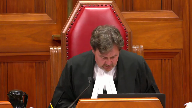
Be seated.
In the case of Ryan Curtis Riley against Her Majesty the Queen, for the appellant Ryan Curtis Riley, Deborah Hatch and Michael Bates.
For the intervener Criminal Trial Lawyers Association, Danielle J. Song, for the intervener Aboriginal Legal Services, Jonathan Rudin, for the intervener Criminal Lawyers Association Ontario, Boris Butensky, pour l’intervenant association québécoise des avocats et avocates de la défense, Maitariane Gagnon-Rocque, for the respondent Her Majesty the Queen, Jason R. Russell, for the intervener Director of Public Prosecutions, Eric Marcoux, for the intervener Attorney General of Ontario, David Friesen, pour l’intervenant procureur général du Québec, Catherine Bélanger.
Ms. Hatch.
Speaker 2 (00:01:55): Morning Chief Justice, justices.
Speaker 3 (00:01:58): Good morning.
Speaker 2 (00:02:03): In this case, we look back 25 years ago at what was said in Simpson where it was recognized that section 503 of the code may be one of the most important sections in the criminal code and that the police must bring detainees to a justice expeditiously.
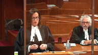
That was 25 years ago.
And the court noted there that if necessary a trial would even be interrupted for this justice.
Now, Mr. Riley’s experience in this case where he was taken into custody, essentially languished in cells for 35 or so hours in a small cell with not even a bench long enough for an adult to sleep on, with no blanket, no pillow, with lights, industrial lights on 24-7, a filthy cell that smelled of urine, of vomit, an unsanitary sink.
This was the evidence before the trial judge.
Coupled with evidence that these breaches, this was happening to hundreds of people in Alberta every month, hundreds of people.
This was routine, it was systemic, and it was ongoing.
And I’m going to focus my submissions this morning to the principles that are at stake here.
And on the decision of the trial judge, my colleague Mr. Bates is going to address the decision of the Court of Appeal and issues of jurisdiction and standard of review.
This court is asked whether the trial judge, whether a trial judge is entitled to exercise their discretion, which is, as we know, the widest possible discretion when it comes to a stay, according to Bieland and Belushi, is she entitled to exercise her discretion to apply the legal test that this court has clearly established and to carefully consider, as she did, the evidence that was before her?
And to find that the integrity of the system, a system that has to protect at all times the liberty of each individual, was she entitled to find that the integrity of the system was tarnished by what happened here, subjecting an individual to what happened here and was happening to hundreds of other people a month, whether it was 200 in some months or 400 or 900, it was happening routinely and systematically.
And with that backdrop, she considered the evidence here.
Justice Kasirer (00:04:44): Chris Hatch, can you help me just understand how things work in Alberta?
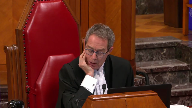
Am I right in understanding that there seems to be a policy that the bail hearing will be held at the first appearance within 24 hours?
That’s the objective of the system.
Overlapping speakers (00:05:03): within a week.
Justice Kasirer (00:05:04): Obviously, this is a question best asked to the Crown, but I’m just trying to understand your view of it as you complain about the circumstances of Mr. Riley.
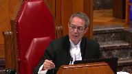
That rather than simply bringing the person arrested before a justice of the peace within the 24 hours, and then saying, if the Crown’s not ready, saying, or there’s another good reason, saying we’re gonna remand this for three clear days.
The system seems to want to do it quickly.
In a sort of an ironical way, the system wants to get people out as quickly as possible, and that’s part of the problem here.
There’s a kind of a paradox to this case.
The Crown doesn’t seem to be using, at least not systematically, 516, which would give them the possibility not just of getting an extra 12 hours, but an extra three days.
How do you see things working, and does that have any impact on the way in which we should view the circumstances of this case?
Speaker 2 (00:06:04): Yes, and so, Justice, they have to be taken before a justice of the peace to be dealt with according to law.
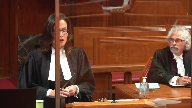
So whether the law permits a further three-day remand, if in fact that’s what the Crown is asking for, nobody was asking for that here, of course, whether the law permits that is a question that a justice, a neutral justice can at least determine, but they’ve got to be taken without unreasonable delay and in any event at the latest within 24 hours.
That is the outside.
That was not abided by, routinely not abided by.
Justice Rowe (00:06:42): I don’t think that answers the question, I’d like to hear the answer myself.
Speaker 2 (00:06:47): So, the question, as I understood it, and I’ll be a little more specific to try to answer it a little better, is what was happening in Alberta and what should have been happening. Is that?
Justice Kasirer (00:07:01): But you’re complaining that your client spent too long before seeing a judge. Yes.
And you’re right to say 503 says 24 hours, your client and anyone else arrested has the right to be brought before a judge.
But the code also provides that in the appropriate circumstances, there can be a three clear day remand. Right.
And so my question was, it appears to me from the outside that the Alberta Crown is seeking to hold the bail hearing within 24 hours, which the code doesn’t require, as part of an effort to get people out who deserve to be out as quickly as possible.
So that’s the paradox that I see here, that the state is trying to help people get out as quickly as possible, whereas they could rely on 516, which would give them, assuming the circumstances are there, three clear days, in which case your client wouldn’t have had anything to complain of.
You’re right to say that that wasn’t asked for in his case.
But if he had been brought before a judge within 24 hours and the Crown had said, look, we have reason to believe that in this circumstance, bail should be denied and we’re not ready to plead it, but we’ll plead it on the next business day or the two days after, then we wouldn’t be here.
Speaker 2 (00:08:38): I think I understand.
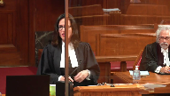
So my answer to that would be the crown may the state may have had aspirational goals to bring people and to get that hearing on within 24 hours but the question is were they meeting those goals?
Because the law is not something that we must just aspire to or that governments must aspire to.
It’s not a choice.
They have to comply with the law and so even
Justice Wagner (00:09:07): I’m sorry.
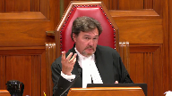
From what I understand, every accused must appear before a just of the peace within 24 hours.
And then during the appearance, just of the peace can release the accused if he doesn’t renounce to his bail hearing and if the Crown is ready to proceed.
And then the just of the peace will release the accused.
The problem here is that the Crown, first of all, he did not appear within 24 hours.
That’s the breach.
And the Crown, instead of asking for a delay according to 516, did not do that because of course he was after 24 hours.
That’s the problem, no?
Speaker 2 (00:09:52): Yes.
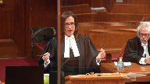
Yes, if there would have been a basis to ask for a delay, if the crown, you know, felt that that was needed, they certainly could have done that.
That didn’t happen.
So that’s not this case.
They simply flouted the law.
Section 503 is clear.
Section 11E is clear.
Section 9, certainly clear.
We know what we have to do as the state.
The question is, are you doing it?
It is not a question.
And the crown respondent would like to say, you know, we were working hard on this.
We were studying it.
We were having meetings and workshops, and we cared.
And I say, on behalf of Mr. Riley, that is little consolation.
That is no consolation to the man or woman who sits in that smelly cell that is not yours.
Overlapping speakers (00:10:42): But that’s not what the code says.
Speaker 2 (00:10:44): And it is not what the code says and it is not what this court has said numerous times.
Justice Rowe (00:10:48): OK, but when I look at 11E as opposed to the code, it says not to be denied reasonable bail without just a pause.
Overlapping speakers (00:10:56): Yes.
Justice Rowe (00:10:57): So, in the, my colleague, Justice Kassir, didn’t put it as a hypothetical, but I will, extending on what he said.
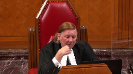
So, if your client gets his bail hearing within 36 hours, which is not in accordance with the code, I agree, but if he’d been brought before a justice of the peace and flipped for three days, so he goes back to the unfortunate holding cell for a total of, what, 96 hours in all, in, having been in the cell for four days, in your view, that conforms with the reasonable bail requirement, whereas having his hearing in 36 days doesn’t conform with the reasonable bail requirement.
I mean, I guess I find that paradoxical as well.
Speaker 2 (00:11:47): Well, I would not say that it does conform with what’s required merely because you bring him before the justice.
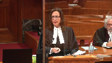
That’s a part of it.
But what is important here and what I respectfully submit the Alberta Court of Appeal was content to do in this case is divorce the decision from the evidence.
And that’s what we’re going to do in this case, is we’re going to go to court and we’re going to go to court and we’re going to go to court and we’re going to go to court and we’re going to go to court and we’re going to go to court and we’re going to go to court and we’re going to go to court and we’re going to go to court and we’re going to go to court and we’re going to go to court and we’re going to go to court and we’re going to go to court
Justice Rowe (00:12:10): saying that I agree with the Alberta Court of Appeal I’m putting to a different proposition. Yes.
Now you can say my proposition doesn’t hold water but my proposition is not that I agree with the Alberta Court of Appeal.
Speaker 2 (00:12:21): No, I understand and I’m just, I’m coming back to that point because I think it ties in quite well with the fact that that decision divorces everything from the evidence that was before the trial judge.

So for instance, going back to your question, Justice Roe, if this man was brought before a justice of the peace, you know, within that period and then remanded for another three days, would there have been no breach here?
Respectfully, I submit a trial judge may well have found that there were breaches because look at the conditions that he was placed in.
He was placed in a cell that is not meant for long-term stays.
It is not meant for people staying 24 hours when you’re going to keep the lights on.
Justice Rowe (00:13:08): How many holding cells have you been in?
I’ve been in a few visiting clients, I hasten to add, and they’re pretty awful places.
I’m not saying this is good, I’m not saying this should exist, but boy, it’s not extraordinary.
Speaker 2 (00:13:20): No, and respectfully, we don’t submit it ought to be extraordinary, and just on that point, how many cells have I been in?
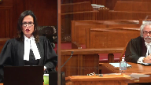
The evidence in this case was that, is that this happens in the shadows.
We don’t, as Council, have access at the time this was happening to the Arrest Processing Unit.
We’re not allowed in there.
It’s happening in the dark, and that concerned Judge Koshard, that this is happening in the dark.
People don’t know about this.
It is not brought to light, but she had a case where it was brought to light, and the evidence was before her, and she was, respectfully, I submit, within her jurisdiction to say this tarnishes severely the integrity of the system to endorse this, to condone this.
Justice Moldaver (00:14:03): Yes, I just, I have a couple of things for you here.
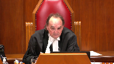
First of all, I think that last argument is a different charter breach and a different charter aspect than the one that we are looking at here.
And if in fact the cell conditions were so terrible that they in and of themselves amounted to some sort of breach of a person’s charter rights, then that is what should be argued.
Here we are dealing with the failure to bring someone under 503 before a justice within the 24 hour period.
And, and so if I could just ask you a couple of things.
Number one going back to Justice Casir’s point and Justice Rose.
The essence of it seems to be that the crown here was mistakenly and misguidedly acting in a way that it thought might be preferable to a lot of accused in terms of being able to get out at the first appearance before a judge.
And if that is so, I’d like to ask you this.
How does good faith play in at all to the issue of whether a stay is warranted?
That’s question number one.
And question number two is this.
Your client was arrested within five months of this new program starting.
And clearly it had problems.
The question that I had for you is the most of the record in this case and the most of the trial judge’s findings of fact, and everybody’s looking at what the situation is a year later.
I’d like to find out how it is that you get to a systemic breach if in fact you’re looking at the first five months of this program and not beyond.
Because your client, it seems to me, is potentially getting the benefit of after the fact evidence that was not available at the time.
And I would have thought that’s important in assessing really how serious was the problem five months out.
So if you could help me with those, I’d be grateful.
Speaker 2 (00:16:09): Certainly.
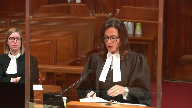
So the first question, how does good faith play into a stay?
I would firstly say that it was not judge Coshart’s finding that this was a situation of good faith.
This was a circumstance where she found that there was an unacceptable willingness to trample on Charter rights.
So it was not a situation of good faith.
And the reason for that…
Justice Moldaver (00:16:42): Sorry, this was looking at 18 months or so.
This was looking at the program long after it was out.
And she was looking at it from the point of view of, this has gone on, this keeps going on, this is willful, this is blatant.
Speaker 2 (00:16:57): She had before her, though, the statistics presented by the Crown of not just the time that Mr. Riley was in custody, but leading up to that, and she had before her some statistics following that.
So, what was the first thing that came to your mind when you heard that?
Justice Moldaver (00:17:13): What were the statistics leading up in the five months, sorry to interrupt you, but what statistics did she have relating to the five month period after the program was rolled out and the time when your client was arrested?
Speaker 2 (00:17:27): Yes, so if we look at the, it’s in the appellant’s record, volume three of three, at tab 14, she had before her the crown state generated bail update.
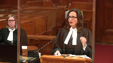
And that had in it references to the number of files, how much people have learned about each other’s side of the business, et cetera.
A focus on files, a focus on resources, and business processes, and it had the numbers within it.
So if you look there, you see at page 189, the numbers on the side, you see the numbers from 2016, October, at four people who were detained over 24 hours, and that may have been 30, 36, 40 hours, and then you see those numbers going up.
Those are the numbers per month, 131 a month, we see that the month we’re talking about for Mr. Riley, 463 people, the next month, 913 people.
So she had those numbers before her.
And then the crown further put in the next exhibit, which is at page 191 of the appellant’s record, and then beyond that at tab 15, you’ll see some updated statistics that were presented to the court of appeals.
So there were numbers, there were numbers before Mr. Riley and after, and we see that the problem was a serious and continuing one for hundreds of people. So
Overlapping speakers (00:19:05): Oh, I just want to…
I’m not going.
Speaker 2 (00:19:08): Yes, I wanna make sure that I answer the questions that you’ve asked.
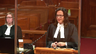
So how does good faith play into a stay?
I would respectfully submit there, my Lord, they knew, they knew that this was a problem, and they advised then Chief Justice Whitman in the Alberta Bail review case, they advised him that they needed a stay in order to comply, otherwise they were going to have to potentially release a lot of people unconditionally.
That’s what they knew that they would have to do to comply with the law, so they said, we need an exemption for six months, and they got that exemption, but they did not use that exemption the month that Mr. Riley was detained.
They proceeded onward knowing that they were going to breach people’s rights and detain them unlawfully, and that is a critical fact in this case.
They asked for an exemption, they got it, they told the justice they needed it to comply, and they didn’t use it, so this was deliberate.
They had statistics, they monitored the situation, they were aware of it, they had a business analyst who was monitoring the numbers, the files, not, I would say, the people, and the evidence before the trial judge.
Ms. Zhang, the business analyst, testified, we made a lot of minor changes, so they tweaked the system, they made minor changes, they knew it was not going to be compliant, they elected to not do certain things to make it compliant, and that’s their choice, because governments can do that, and it’s not for the court to tell them how to do it, but if they elect to run it that way knowing that they are breaching the law repeatedly and systematically, then a court can, and respectfully, I would say, in this case, must do what it’s called upon to do as a guardian of the liberty of the individual, and that is impose a stay, say that we as courts do not condone what went on.
Justice Côté (00:21:07): Ms. Hatch, is it your position that when a charter breach is caused by a systemic problem, the individual will automatically be entitled to a stay of proceedings?
Speaker 2 (00:21:24): I would say not, not at all.
It’s one of the factors, certainly, that a judge is entitled to take into consideration.
Was this an isolated breach?
For instance, you look at this court’s decision in Bevos.
Justice Côté (00:21:36): I’m talking about a systemic, because in enables, you have to do the weighing exercise, even if there is a systemic situation, let’s say, but here, when the trial judge did the exercise, she considered all the factors.
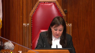
She was of the view that the charges faced by your client were serious, the domestic assault was a serious problem, that society had an interest in adjudicating the matter on the merits, but it seems that the systemic nature of the problem outweighed all other considerations.
So, does it mean that a stay should be automatic?
Speaker 2 (00:22:17): Respectfully, I would submit no, and I would say that was not her decision that a stay would be automatic merely because a problem is systemic.
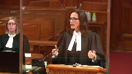
She did consider that.
It is a relevant consideration.
This court says so in Babos and in other cases.
It’s something to consider.
It was not her decision that every situation like this would warrant a stay.
It was her decision that Mr. Riley’s case on the evidence before her, including, you know, the only sleep he gets is sitting up with sores on his back or his backside as a result of this detention.
Looking at all of that evidence and then weighing it and balancing it and considering the systemic nature of it, all of that together warranted a stay of proceedings.
So not the case that every, and certainly the crown respondent would like to say, you know, every individual would get a stay.
That is not the case and that was not her finding, I would submit.
Justice Wagner (00:23:13): In this case, isn’t that comforting for the judge to learn that the after-the-fact evidence confirms his initial conclusion on the nature of the systemic breach?
Speaker 2 (00:23:30): Yes, and my colleague Mr. Bates is going to speak to that in a few minutes, but it was not the case that this was greatly improved by the time the case got to the Court of Appeal.
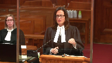
It remained systemic.
I think respectfully I would say rather the crown perhaps hoped that the decision would not stand and that things would just continue on in the dark as it was, and this is where we respectfully say this court has an opportunity to reaffirm what it has clearly said repeatedly on many occasions that the courts are the guardians of our liberty and that the state is entrusted with the greatest power, the power to arrest, the power to imprison people, but what we expect in return for that is that the state must comply with the law.
It must abide by the law.
It must take that liberty away only when and only to the extent that it is permitted to do so, not by breaching section 503 and not by breaching the rights set out in the charter and not by flouting the many decisions of this court in Hall and Simpson, which reaffirmed 25 years ago the trial judge’s discretion to impose a stay in circumstances like this.
Justice Kasirer (00:24:56): Were they really circumstances like this?
If we think of what happened in Simpson, which you’re right to say this court rather quickly overturned the Court of Appeal and went and restored the trial judge’s views, much as what you’re asking for, but were the circumstances of Ms. Simpson in Newfoundland the same as what we’ve got here?
Speaker 2 (00:25:21): Of course, they’re a little bit different, and yet the same in a lot of ways.
So she is detained because they don’t have a practice of justices of the— people being brought to justices of the peace on weekends, and she is detained for a couple of days as a result of that.
Wasn’t it fascinating to see her being detained for a couple of days, and yet the same in a lot of ways?
Justice Kasirer (00:25:38): that she was arrested on the Friday by authorities who knew that she was going to spend 48 hours waiting, which is not exactly the same circumstance as Mr. Riley.
Speaker 2 (00:25:50): We say it’s very similar, though, my Lord, because the state knew when they took Mr. Riley into custody, the state well knew, the police knew, and the crowns knew that this was going on.
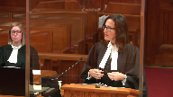
All of the state actors knew that this was happening.
And so it is a similar situation, respectfully, we say.
When the state is permitted to do what is convenient or expedient, as in that case, then I suggest it does engage the same considerations, and I would say that this court, although the judgment in Simpson is short, I say this court’s consideration in that case was not necessarily a quick one.
It would have been given significant consideration, and the dissent that essentially was vindicated in Simpson was a thorough dissent, considered the trial judge’s decision, and set it out very carefully, and it is a similar case.
It is a very similar case.
The end result for the detainee is very similar.
Justice Brown (00:26:54): Well, in the reasoning too, it strikes me as somewhat similar as the reasoning that you or your, I suppose your colleague will, will urge upon us with respect to reviewing the Court of Appeals decision here is, is that in that case you had the Newfoundland and Labrador Court of Appeal, actually I guess the Newfoundland Court of Appeal as it then was.
Overlapping speakers (00:27:14): Ben’s butt here.
Justice Brown (00:27:15): 95, I think so, got it, saying well a stay wasn’t necessary, a civil claim could have been pursued and you had this court saying that no, it’s mere fact that the court would have ordered a lesser, that the appellate court would have ordered a lesser remedy is not itself a reason for interfering.
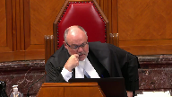
Overlapping speakers (00:27:40): Yes.
Justice Brown (00:27:40): So there’s that similarity of the process of reasoning that it followed and that you’re urging upon us.
Speaker 2 (00:27:47): Yes, I would agree, my Lord.
Justice Moldaver (00:27:48): I would have thought in Simpson you could make out a case of abuse just based on the facts.
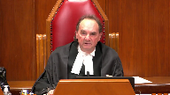
They had this policy, which the police knew about in Newfoundland, that you don’t, that if you are arrested on a Saturday or Sunday, you don’t get a bail hearing until the Monday.
And in this case, the arrest was on a Sunday, as I understand it, knowing full well that there was a holiday on Monday.
So she was going to be kept in custody 48 hours.
The police officer knew this.
He knew that she had been out, that the crime in question was seven months earlier.
There was no urgency.
She was not an escape risk.
She was not a flight risk.
And this almost looked like a vindictive measure on the part of the police officer, who could have arrested her on a Tuesday to keep her in custody for 48 hours.
I would have thought on the facts of that case alone, you could find an abuse of process against the individual.
Overlapping speakers (00:28:47): Has
Justice Moldaver (00:28:48): opposed to some systemic breach, I grant you that the policy in question in Newfoundland at the time was one that should not have been there.
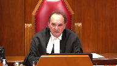
But I don’t see that.
I don’t see this kind of willfulness in terms of your client.
There’s no suggestion that the Crown was trying to punish him or anything else by getting them there 12 hours too late.
The Crown was trying to in its own misguided way see if they could get him out earlier.
Speaker 2 (00:29:20): Well, and in Simpson it’s important that the trial judge’s finding was not that the authorities were trying to punish Ms. Simpson, but essentially that policy and that practice had that effect on her.
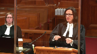
Well, here the authorities had a practice, and this forms a part of Judge Coshart’s decision.
The authorities had a practice of not bringing people across this tunnel two blocks that they use when it’s convenient to them to transport people to court from cells back and forth, but they elected to not use that.
They could have brought for Mr. Riley many hours of his detention, the bulk of it.
The provincial courts were open with dozens of judges sitting at that courthouse.
He could have been brought before a justice, not just him.
Justice Moldaver (00:30:11): I mean that’s one of the issues here as to whether the trial judge was right to even consider this, because it’s like dropping in like 20 or 30 people on the provincial courts, some wanting bail hearings at the first moment,
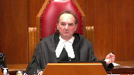
some not, the crown wanting adjournments on some.
I think with respect there’s a certain reality check that’s got to be done there.
Speaker 2 (00:30:31): Well, and that may not be the ideal result or the ideal thing to do, but it is one option.
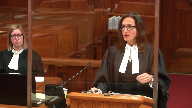
When you know that you are systematically breaching people’s rights and breaking the law and not complying with Section 503, you know that this is something you could avail yourself of.
Should it happen all the time?
Probably not.
Should the system be resourced properly at the other end so it doesn’t have to happen?
Absolutely it should.
Judge Cochard could not go so far as to tell the government here’s how to use your resources, but she was simply saying if you elect to not do it, if you elect to do this on a shoestring budget and you look at that exhibit that I referred to in the appellant’s record that was before her that talks about IT getting some loaner equipment to get this bail system working, that’s how the system is being resourced.
So it was within her discretion to say this tunnel was available and he could have been brought there.
It may not be the best outcome, but if it helps you to respect people’s rights and to abide by the law, it’s there for you.
So that formed a part of her decision.
She had a record before her that was I submit fulsome.
The crown could have called whatever evidence it wished to.
It presented staff Sergeant Fay who talked about conditions of cells, who talked about how the police knew this was going to be a problem when they initiated this new system.
It’s not like this just arose with no understanding.
This was going on for 17 months and it continued and it was flagrant.
Her finding that it was flagrant and systemic and continuing and that there was a culture of complacency, inertia, are findings that were supported by the record that was before her.
Importantly, she noted these are breaches of fundamental rights, some of the most important rights that we all have.
Paragraphs 63 to 65 that are reproduced in the condensed book, she makes those findings.
She did not find as the crown contends that the government was just unable to quickly resolve this problem.
That was not her finding at all.
So we submit the finding was within her jurisdiction.
It was supported by the evidence that was before her.
It didn’t have to happen.
It didn’t have to be a continuing issue.
And when you braid all of that together with the conditions that Mr. Riley himself experienced, which the Court of Appeal touches on in maybe a paragraph, she was entitled to make the finding that she did.
You read her judgment and it is a powerful indictment of a tragic failure within the bail system in Alberta.
It was a meaningful attempt to dissociate the justice system from what was going on and what continued to go on.
And if we absolve courts of the duty and the responsibility to impose a remedy that is just and appropriate under the residual category, where it is appropriate, where it is supported by the evidence, what are we left with?
It’s important and it’s fundamental that the abuses of the state are brought to light.
But it is not enough to just bring them to light.
It is imperative that courts be permitted to do what they must do as guardians of our liberty.
And this court has spoken of that in so many recent bail cases and one would think has stated it as clearly as it could be stated.
But the message doesn’t seem to be getting through.
And this should not happen to one person, but it absolutely shouldn’t happen to 400, 500, 900 people a month in one province.
It’s simply not acceptable.
Justice Abella (00:34:41): This seems to turn, sorry, Ms. Hatch, were you over here? Oh, okay.
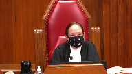
Thank you.
Have you finished your thought? Yes, yes.
So on that point, the case seems to turn on whether or not, not whether there, so much whether there are systemic problems, which the trial court found, but on the balancing, which the Court of Appeals said wasn’t properly undertaken because there was insufficient attention paid to society’s rights to a full trial on the merits.
How do you propose that we weigh those, leaving aside the deference question, but how do you say we should look at the balancing, the exercise, and what we should be thinking about?
Speaker 2 (00:35:31): Yes, and I won’t touch much on the deference issue, except to say, because my colleague is going to be addressing that, that the balancing is for the trial judge to do, and it is one thing to not, as in the Zarin Chang case, to not conduct that balancing.
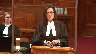
That is a problem and that would be deficient reasoning.
But when a trial judge does conduct that balancing, then that ought to be left, and I suggest the law supports it, being left to the trial judge.
So here, yes, we absolutely have to weigh, or a trial judge must weigh, society’s interest in an adjudication of the case on its merits.
But this court has said many, many times that that does not always trump all other considerations.
And with considerations like the liberty of the individual and the right to be left alone by the state, unless the state has the power and has the right to use that power, we have to weigh those things in.
And the Crown recognized at trial here, she recognized this was serious and this would, not in her words, she didn’t say, you know, shock the public conscience, but she said the public would be concerned about this, very concerned, I suggest.
The public is concerned.
When they find out that this is happening, not just to one person, but to many, and not just to many, but to hundreds of people every month, that it’s ongoing and that there is a sense of complacency or inertia on the part of the state, it is very concerning.
When the state knows this is going on and does not convert some cells for people to be able to, you know, sleep if they’re going to be there for 36 or 40 hours while the government…
Justice Abella (00:37:15): The first part of the balancing was hatched.
My question is where do you put in the seriousness of the offense in the balancing when you have, as you assert we, as we clearly have in this case, systemic problems? Yes.
Where do you put that?
Speaker 2 (00:37:31): You put it in as one of the important considerations that has to be balanced.
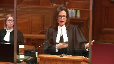
It is absolutely an important consideration and it is a consideration that Judge Coshard gave weight to.
She said, no question, this is a serious allegation and that’s something to be considered but it cannot outweigh, it ought not to outweigh all other considerations and as the Crown said at trial, it’s a question of how far you want to distance yourself from this as the court.
Well, the court is entitled to consider the seriousness of the crime alleged but not at the expense of everything else and sometimes there are fundamental principles that we value so much as society that we will not sacrifice anything just to get a case prosecuted.
Justice Côté (00:38:23): to me, it seems to me, Ms. Hatch, that in case of systemic problems like we have here, and it goes to the question of my colleague, Justice Avila, this factor will always outweigh all other considerations, because here the only factor in favor of your client was that, the systemic nature, because all the other factors, the judge said, it’s serious, society has interest in having that matter adjudicated.
So to me, it seems that every time there is a systemic problem, it seems that this factor alone will outweigh all other considerations in the balancing exercise.
Speaker 2 (00:39:05): And respectfully, I submit not, because that wasn’t the only factor is that it’s systemic.
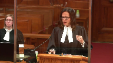
The other factors were the nature of the breaches that were engaged, the fact that there were a constellation of breaches, of multiple charter rights and of the criminal code, and importantly, his specific circumstances and the evidence that was led of that.
That was an important factor.
We don’t suggest that because it’s systemic, every one of the people that this happened to would necessarily get a stay, but it would be for a trial judge to weigh.
And I want to leave Mr. Bates a few minutes to address the Court of Appeals judgment.
I think I can importantly close by reminding us all of what this court said.
This court doesn’t need to be reminded, but this court said and fairly recently in antick that it is time to ensure that the bail provisions are applied consistently and fairly.
The stakes are too high for anything less.
And Judge Coshard was entitled to consider that and bound to consider that and did consider that.
Justice Moldaver (00:40:16): Was this the first case of this nature?
Was this the first case brought to the courts for an abuse for something that had been going on, as you say, for months and months and months and months?
Speaker 2 (00:40:28): All I can say is it’s the first one that I’m aware of that dealt with this issue at this time.
Justice Moldaver (00:40:39): I’d be just asking whether or not some remedy short of a stay in a test case like this to say to the government this is unacceptable.
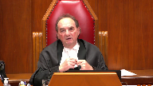
But this is a very serious crime.
We don’t minimize the fact that he was kept in jail for 12 hours longer than he should have.
But when one looks at the circumstances, it could have been a lot worse.
He could have been kept for a couple of days while the Crown got ready to proceed with a bail hearing.
And we want to let everybody know that this is unacceptable.
And if this continues, it will potentially attract the most serious remedy known to our law, which is to stay the proceedings.
But in the meantime, we can say that this would be a case for damages.
We can reduce the sentence if he gets convicted and move on from there and send a message to the government that this cannot continue.
Speaker 2 (00:41:41): I would say this, my Lord, our rights and our liberties are not provisional.
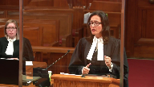
The government doesn’t get a court ruling to warn them and say, you watch out, you’re violating these rights.
The court is getting concerned now.
What an individual is entitled to is a remedy that addresses what is going on, and that may include a court saying, we cannot condone this, we cannot engage the system.
Justice Wagner (00:42:09): Ms. Hatch, just to follow up with my colleague’s question about if there are other cases in which stays were issued, I would refer you to the case of Charles Garneau against Marissa to the Queen, April 2nd, 2020.
Overlapping speakers (00:42:26): Yes.
Justice Wagner (00:42:26): The Queen Against L’Amoureux, 2002.
Air contre Dufresne, 2004.
Overlapping speakers (00:42:32): Yeah.
Justice Wagner (00:42:33): This is our jurisprudence from Quebec in which state of proceedings were.
Speaker 2 (00:42:37): And I understood the question to be in Alberta.
Overlapping speakers (00:42:41): That’s what the question was, sorry.
Speaker 2 (00:42:43): Yes, I recognize that it has been litigated more recently in other places.
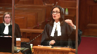
I will just say this.
The rights are not provisional.
The government must respect them and importantly and looking at the statistics and the time lines here, this charter motion was filed six months before it was heard and yet had the government changed were the results different six months later on the date he was tried.
No, still, hundreds of people every month were being subjected to this treatment.
So it wasn’t the case that the government just needed time.
A year later after judge’s decision in the court of appeal, fresh evidence was brought there and the problem was still, I will say, monumental.
This is happening to hundreds of people every month and it continued.
And so to say that the government should, you know, get a warning and watch themselves, respectfully I say an individual is entitled to seek relief in the court and the court is entitled to say we must distance from this.
We don’t condone it.
This is not how a civilized country treats its citizens.
And Mr. Bates will now have some comments.
Thank you very much.
Speaker 4 (00:44:12): Yes good morning.
Having had the benefit of course of listening to the exchanges up to this point I’m going to try and tailor my comments to a few specific items.
One of them that seems to come up here as I’m looking at this is the concern about whether or not there’s a benefit that accrues to the accused person here by the fact that there was subsequent evidence before the the trial judge and then ultimately also before the court of appeal.
With respect the very nature of the remedy is a prospective remedy and it’s not supposed to be to redress the wrongs done to the individual.
So the prospect of nature actually fits up well with the fact that when the application is brought you find yourself going through the Bebos test you’re on the residual ground you’re not dealing with trial fairness you will necessarily get to this analysis of the systemic nature of the breach.
Had the evidence in front of the trial judge been we were in a transitional period a six month transitional period and we’re out of it.
Mr. Riley’s breach was related to that.
That’s a completely different record than what we have here and ultimately when we get to the court of appeal we’re even in a worse situation.
So when we look at the concept of standard of review and what the jurisdiction of the court of appeal ought to have been is this a case that’s decided so clearly wrong as to create an injustice when the crown files a factum at the Alberta court of appeal suggesting that they have been they have quote taken consistent and diligent steps to identify and correct the problem and have made progress in correcting the problem.
It is simply not possible to create and instantly implement a perfectly functioning system.
They submitted that on November 1, 2018 19 months after the unlawful detention of Ryan Riley and with respect to the characterization you know Justice Moldaver has said misguided you know that the crown was looking to try and provide some benefit to the accused well misguided I would replace with unlawful.
The there’s no surprise here nothing about the criminal code changed in a way that that would have the crown go wow
we didn’t realize we were going to have to meet these challenges.
In fact they knew they were warned they were told by the Edmonton police in advance this problem was likely to arise and the detective who came and testified repeatedly said that he brought this matter forward and kept raising his concern to the point that he was exasperated.
So that’s the evidence that was on the record and then they show up 19 months after they did it to Ryan Riley saying well we’ve taken consistent and diligent steps but the fresh evidence that got before the Alberta court of appeal shows that during the same week that they filed that factum and made that assertion in Edmonton alone there were 185 individuals detained by the Edmonton police service and not brought before a JP within 24 hours.
185 in in one week in one location in Alberta is bad enough as a raw number but what is it as a percentage?
Nearly 70 percent it was 185 out of 267.
Now if we were to take that and put it in the context of nine members of the Supreme Court of Canada sitting here before me that means six of you would not get the benefit of the federal criminal law and procedure in section 503 as bolstered and protected by the charter.
What what I would say is that when we’re looking at the concern or the concept that there’s some kind of paradox about the difficulty of looking at this from what might have been able to happen this is part of the reason why we have to be very mindful of standard of review because there’s no evidence brought forward from the Crown at trial to say well we had a basis to ask for an adjournment.
We would have been able to apply and obtain an adjournment you don’t get one just because you ask you have to be able to establish that there should be one.
But I would say here’s what’s most important about that at the end of the day 503 of the code is is not there as a technicality or a mere suggestion.
If they don’t even bother to bring you out of the cage that they’ve put you in to put you in front of an independent judicial officer how do we even get to the point of talking about whether or not they’re acting in good faith.
The fact of the matter is the court of appeal of Alberta was presented with this situation in in a circumstance which they found an appellant a Crown appellant coming forward to them with a sense of resignation and fatalism.
Effectively it appeared as though they’d given up.
Their position was disappointing unsatisfactory.
They came forward showing that nearly two years after the fact they hadn’t fixed the problem.
That was a winning appeal.
That was how you knock out the trial judge’s exercise of discretion in the area of the broadest possible discretion is to come with that bad of an argument.
And with respect if if we look at what the purpose of the standard of review and not altering what the issue was to be considered the court of appeal really needed to simply examine did Judge Koshard go through the proper test when she exercised her areas of discretion that may have gone one way or the other.
Did she do so based on findings that were based on the evidence or did she just make things up?
That was really the exercise that ought to have been gone through and instead what the court of appeal did was in a call from the Crown looking for some kind of context to be able to explain the breaches that they had admitted when searching for answers searching for this additional context that would be able to say that what Judge Koshard did couldn’t be upheld in terms of discretion.
This is where then the notion comes in that there needed to be some kind of systemic remedy in that this was a systemic charter application.
But with respect it wasn’t.
It was an application by Ryan Riley where the breaches of his charter rights were admitted by the Crown and he was seeking a remedy and in order to deal with the test for remedy he addressed the systemic nature of it.
He brought forward the evidence to demonstrate that it was.
Justice Martin (00:52:05): Mr. Bates, I want to talk to you about that sort of distinction that I think was introduced by the Court of Appeal, which is obviously this is the second type or second branch of BABOS, and one would necessarily have to look to the systemic impact of what’s going on in terms of the administration of justice.
But how can something not be personal and systemic at the same time?
I mean, there seems to be a creation of a distinction in the Court of Appeal reasons between what happens to the person and what happens in the system, but obviously for Ms. Simpson and Mr. Riley here, what was happening in the system was visited on a person, on an individual.
So how can we even be in those categories, I guess is what I’m asking you.
Speaker 4 (00:53:02): Well in effect Justice Martin that’s the position of the appellant here has been to say that the Alberta Court of Appeal effectively introduced a non-existent criteria because to your point of course it happens to every one of these individuals and it’s thousands of individuals so again this idea that that this is being done to perhaps provide a benefit that really renders the notion of getting in front of an independent judicial officer as though that’s somehow meaningless it’s absolutely directly personal to the individual when you don’t get to have the opportunity to come before the JP even though the federal criminal law says it’s required and it’s backed up by the charter you’re left in that situation what is to stop I mean the officer testified he remembered mid-40s as being the highest one he could think of but what is to stop that going on for hundreds of hours days weeks nothing really it’s a simple step so the systemic aspect of it cannot possibly be removed from the individual aspect and then I suppose more to the point the Court of Appeal seems to think or characterize a stay of proceedings here as a remedy that was a windfall in in terms of providing something to the individual but that wasn’t systemic in that it wasn’t directed toward the the systemic nature of the breach but by definition a stay of proceedings having followed through the Babos test is systemic in nature if you’ve gotten to a balancing point and you’re saying look I have to balance what is the long-term negative impact to a system that values the presumption of innocence that values the rule of law that doesn’t allow the Alberta Attorney General for whatever reason as laudable as it may be to simply not comply with the federal criminal law which is not theirs to decide so it is a systemic remedy it does go towards the systemic nature of the breaches and it also is addressing the personal nature of the fact that this was done to a human being might be
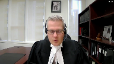
Justice Brown (00:55:33): I’m debating about angels dancing on heads of pins, Mr. Bates, but I’m wondering if it’s more correct to say in those circumstances the stay is an individual remedy, but given for systemic reasons, those systemic reasons being perfectly legitimate reasons that are in fact channeled expressly through the Babos framework.
Speaker 4 (00:55:56): Precisely, so it isn’t to say that there is two different types of remedies, there really is the personal remedy.
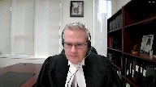
And that addresses the jurisdiction issue Justice Brown because fundamentally when you go through the full Court of Appeal reasoning there’s a number of paragraphs where there’s this suggestion that somehow it ought to have been more required from the appellant that as the person bringing forward the breaches and saying this is what was done to me that was unlawful, that there needed to be this additional evidence that would take it to the level that they would have a record that they could start providing a quote-unquote systemic remedy.
And as the appellant has noted in our materials, this is a Provincial Court criminal trial.
Ryan Riley is fully entitled and it is the right place for him to litigate the charter breaches that occurred during his arrest that brought him before the the trial court.
What he’s not supposed to do and the court has no jurisdiction to deal with is some kind of broader systemic analysis to then look for and start issuing remedies that would address how the government needs to make changes in order to prevent the ongoing systemic nature.
And so I think that really does bring it back to the idea this was always an individual remedy and as Justice Brown has just pointed out, there’s absolutely nothing incorrect.
In fact, it was an obligation of the trial judge in this situation to consider whether or not this was systemic.
Overlapping speakers (00:57:39): And by the time it came…
Speaker 4 (00:57:40): before her, it plainly was.
And by the time it came before the Court of Appeal of Alberta, it was far worse.
Justice Moldaver (00:57:48): The one of the themes running through this and the concern was the opening of the floodgates and virtually based on this ruling everybody would have to be get a stay just help me out with this how how would this play out if it was an attempt murder as opposed to a serious domestic violence case as opposed to theft of an automobile.
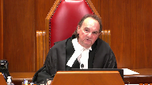
Surely to goodness I would have thought there’s some major differences in those and yet based on this trial judge’s reasoning I don’t know how you would ever uphold going forward on an attempt murder for example.
Because someone wasn’t taken to the judge they stayed an extra 12 hours in custody.
Speaker 4 (00:58:42): Well the best way I can answer the question Justice Moldaver is that that is exactly why the balancing exercise is required as mandated by this court in Babos and it is the it’s the job of the trial judge to do that balancing and when they are making the balancing of society’s interests in hearing the charges on the merits and the long-term harm to the administration of justice that is where they have to balance that factor.

Just tell me how you balance it out.
Justice Moldaver (00:59:16): just tell me how you balance it out if it’s attempt murder.
That’s all I’d like to know.
Speaker 4 (00:59:23): Generally speaking, the more serious the charge, the more likely that that balance will tip in favor of a hearing on the merits.
Justice Moldaver (00:59:30): Bearing in mind this is different from Jordan, where the stay is the only remedy.
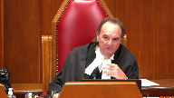
Here we have other potential remedies, so, but you say, and your colleague quite properly and very eloquently, there’s really no other remedy that could be imposed here.
So, I put this to you, what remedy would you impose short of a stay if it was a temp murder?
Speaker 4 (00:59:56): Well, there may be a different circumstance that would allow a different remedy to be imposed.
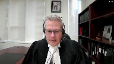
I guess really what I’m saying is step one, attempt murder.
The more serious the offense, the more likely that that balancing factor weighs in favor of a hearing on the merits before you even look at whether there’s other alternative remedies.
Because you have to already have, if you’re following Babos, you have to have satisfied yourself there aren’t any alternative remedies before you’re into the third stage in the balancing portion.
Justice Moldaver (01:00:28): So a serious domestic assault, though, doesn’t cut it.
Speaker 4 (01:00:38): it it may in some circumstances and it may not in others.
I mean again that’s the nature of the discretion at the trial level and the balancing if if these breaches were far more under control by the time that any judge is hearing the the case they may decide I’m sorry it’s it
you know all of those same exist issues still exist about the presumption of innocence and the harm that this creates for the administration of justice but they’ve managed to do a much better job of getting it under control or there’s other factors that are coming in
so I’m not sure I can answer it better uh you know the severity of the offense does matter.
Justice Moldaver (01:01:15): at all?
Is the accused entitled to a remedy at all on your thesis or does the judge in the balancing portion just come to a conclusion that society’s interest in the trial is more important?
You don’t get any remedy.
Speaker 4 (01:01:28): Well, I guess that comes back to the phraseology of an adequate alternate remedy, because if we look at, for example, the concept of damages, and this is one of the concerns that is raised by the Court of Appeal judgment, is to say, you know, presumptively we’ll say it’s $100 an hour for five hours and then $250 an hour after that.
I mean, that’s something that they just came up with on their own.
Appropriate alternate remedy, I might have said had this come up and been something addressed by Council and the parties argued it, why wouldn’t it be $5,000 off the start?
A number of charter damages cases start with $5,000 as being an appropriate level.
Justice Moldaver (01:02:11): If it did, and if that happened in every case when this province was doing this overholding, I would have thought that would send a pretty clear message to the province and the people of the province, but maybe not.
Justice Wagner (01:02:24): I will let you answer that question and then your time is up.
Speaker 4 (01:02:29): Yes and I guess maybe that’s my point ultimately I rely on the submissions that we have obviously in writing but that’s ultimately the issue where it comes to the jurisdiction part of this argument that should have been argued by the parties before the Alberta Court of Appeal before they just come up with a number because with all due respect I would say what they came up with was a license to continue the offending behavior a hundred dollars an hour big deal and is that realistically possible for anybody like Ryan Reilly to bring forward their civil claim for their 200 bucks or however much they might get the answer is really no

so yes maybe five thousand
maybe ten thousand obviously the higher you go the better you could you could suggest that that would be an adequate alternate remedy.
Overlapping speakers (01:03:15): Thank you very much.
Speaker 4 (01:03:16): At the end of the day, Justice Kotschard didn’t find that there was one.
She did turn her mind to it, but did not find that there would be an adequate alternative.
Justice Wagner (01:03:23): There’s one last question by just Sabilla.
Justice Abella (01:03:25): Just a quick question, sir.
Do you accept or not that a provincial court judge has the authority to grant damages?
Speaker 4 (01:03:34): I would say not.
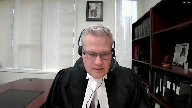
That invites a different process to be involved.
Costs have been seen regularly without difficulty as within the jurisdiction of a provincial court trial judge.
Damages, that enters into a whole different territory that should be left to the civil law and not be imposed upon a criminal trial judge to try and address.
Justice Abella (01:04:05): suggested that as a possible alternative remedy, it’s not appropriate in your view.
Speaker 4 (01:04:11): Well, even the Court of Appeal themselves said, unfortunately, this would require a separate civil claim to be filed.
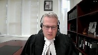
And then I would say in one of the most baffling parts of the judgment goes on to just presume that because these breaches are admitted, the Crown will just send checks.
You don’t even need to file your claim.
I mean, again, that was not argued, it wasn’t raised, it’s ridiculous.
And there’s no evidence in this case to suggest that there would be anything like that.
So it does emphasize the illusory aspect of that as an alternate remedy that would actually be adequate.
All right.
Thank you very much.
Justice Wagner (01:04:51): Mr. Daniel Song.
Speaker 3 (01:04:57): Yes, good morning Chief Justice, just just justices.
The Criminal Trial Lawyers Association asks this course to consider two discrete submissions in deciding the appeal.
The first is that rareness should not be a precondition for the granting of a stay of proceedings and as long as a trial judge properly considers alternative remedies under Babos, pointing to another alternative remedy on appeal is insufficient to cast aside deference.
And the Alberta Court of Appeal here effectively said that if Mr. Riley were to receive a stay then so too would everyone else held over 24 hours and the court said that this would be contrary to the rule that a stay is an exceptional remedy and certainly the court was alive to the fact that hundreds of people were being overheld every month and it focused on whether stays would remain exceptional in the future.
And so in effect the Alberta Court of Appeal said a stay would no longer be an appropriate remedy if a charter violation becomes routine and in my submission that cannot be correct.
And we find main support in this court’s decision in St. Cloud where the Chief Justice had directed trial judges not to use rareness as a criterion in the context of the tertiary ground for bail hearings because it invites a comparative approach that distracts the trial judge from assessing the individual circumstances of the case.
Rareness, if that’s to exist, is a consequence of the proper application of the factors under the tertiary ground and it’s not the role of bail judges to determine whether detention would remain rare in the future.
And the Babos framework here is already stringent.
Academics have already indicated and observed that the Babos framework sets a very high bar.
Indeed Professor Kaiser described it as a laborious framework and it’s that laborious framework that would ensure that stays remain exceptional as a consequence of its proper application and asking if a stay remains rare in the future would bring uncertainty into the analysis.
And we say at paragraph 21 of our factum that if a stay of proceedings is granted more frequently for routine charter breaches then this flows from the inertia of the systemic problem itself and not because the courts are improperly relaxing the Babos test.
There’s nothing ordinary about routine systemic charter violations.
The blunt force of multiple stays would be in my submission a proper judicial response to what it would amount to extraordinary circumstances.
Justice Moldaver (01:07:55): What about a class action?

Are we allowed to consider that?
Because as I understand it, that’s what’s going on.
Major class action against the government.
I don’t know what kind of damages they’re seeking, but I suspect they’re large.
Is that something that we should be able to take into account as an alternate possible remedy where there are systemic problems in the system like this?
Speaker 3 (01:08:21): but ultimately as the council for the appellants have urged upon the court is that it’s Mr Riley in this case who brought the application under 24-1.
A class action might very well be another avenue in which individuals who feel aggrieved would seek a remedy or seek some sort of redress for the violations of their charter rights but in this case and especially when we’re dealing with the 24-1 framework in my submission considering that a class action might be an available remedy in a separate proceeding is not relevant in the BABOS framework because it’s not really an alternative remedy to the issue.
And just quickly going to the standard of review, the Alberta Code of Appeal here set aside deference because damages could be a presumptive remedy or a reduction in sentence could have been a remedy but remember the purpose of BABOS is to provide a road map to the trial judges to exercise their very wide discretion in crafting a remedy and to exercise that judicially and the process of deciding whether an alternative remedy is capable of redressing the prejudice to the justice system involves layers of discretion.
So identifying other alternative remedies on appeal is not enough in my submission to usurp that discretion.
I accept that in BABOS Justice Moldaver had indicated that the trial judge had erred to fail to consider the exclusion of firearms where the police had allegedly been colluding but it needs to be remembered that in that case there were a host of errors that the court had identified in the trial judge’s reasoning process and indeed on the issue of the Crown’s threatening conduct there was no argument made about an alternative remedy and so this court then went directly to the third stage of the BABOS analysis to decide whether a stay was appropriate and that third stage exists precisely because of the possibility of uncertainty in stages one and two of the framework and I asked the court to heed Justice Fish’s remarks in the case of Belushi where he said that he might well have granted a lesser remedy implying that an alternative remedy was available but found that the trial judge expressly considered various alternatives and found that none were adequate and just to paraphrase
Overlapping speakers (01:10:54): I will ask you to conclude because your time is up.
Speaker 3 (01:10:56): Yes, just in conclusion, if it was simply enough to identify another remedy to warrant appellate intervention, it would unduly shift responsibility to appellate courts to weigh facts, assess prejudice, and exercise discretion in crafting appropriate remedies.
In my submission, that’s not the role of courts of appeal.
Thank you very much.
Justice Wagner (01:11:18): Thank you.
Mr. Rudin.
Speaker 5 (01:11:27): Chief Justice, justices, in recent years, this court has been particularly concerned with the need for restraint in the bail process.
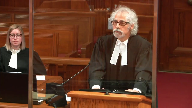
Decisions such as antik and more recently Zora have directly challenged the risk averse attitudes that permeate the system and has allowed the remand population to explode.
This case, however, raises a related but different issue.
Rather than a risk averse culture, this case targets a culture of complacency and indifference, one that allows for routine violation of access to timely bail hearings.
While the specific facts of this case engage requirements for a bail hearing within 24 hours, it is our submission that the resolution of this matter requires to take this court’s words in Zora a wide-angle lens approach to bail.
It considers the particular circumstances of Indigenous people.
As this court knows all too well, Indigenous people are massively over-represented in the remand population and the reasons for that over-representation are rooted in the systemic discrimination they face in the bail process.
Our submissions today focus specifically on the situation facing Indigenous people living in the North and more remote regions of the country.
These issues have recently come to the fore through the work of the Vienne Commission in Quebec and the decision of Justice Martin in Balfour and Manitoba.
The Vienne Commission found that Indigenous accused persons from remote communities are often transferred to a number of institutions for bail purposes.
At every transfer the person is subjected to strip searches, onerous travel and the loss of belongings and the situation is even worse for Indigenous women.
These repeated moves and delays mean that Indigenous accused persons face additional consequences such as loss of employment, loss of access to programming, loss of social assistance and potentially the apprehension of their children.
These issues are brought into specific focus in Balfour.
Justice Martin found that the charter breaches in that case, which in one case were months of delay, were directly related to systemic issues affecting Indigenous people living in remote communities or reserves.
But despite Justice Martin’s findings that the applicant’s section 11E charter rights were infringed, there was actually no remedy for them because in one case the Crown stayed the charges and in the other case the person was found not guilty after trial.
That then brings me to the question of stays in the bail context.
We know from this court’s decision in Jordan that when the state is faced with the prospect of the staying of hundreds or thousands of charges, such an eventuality focuses their attention and suddenly change occurs to a system that was previously impervious to change.
Now while the bail context is more fluid than trials, we submit that judges need to have the ability to stay charges when they become aware that egregious bail delays are due to systemic problems within their local or regional bail system.
Justice Moldaver (01:14:41): Just stopping you for one moment, I’m sorry to interrupt, but I mean, as long as damage is there a possibility, and I know your position will be that it’s not really available for a lot of people, maybe that’s why we have class actions, but the damages remedy would be outside the criminal process.
We know that because that’s what the court has said, provincial judge doesn’t have the jurisdiction.
So that doesn’t mean there’s no remedy just because the criminal process doesn’t give you one, for example, if you’re acquitted, you could still bring a civil action to show that your charter rights have been breached and seek damages.
Speaker 5 (01:15:21): So, Justice Moldova, as you anticipated, my response to that is that practically, and particularly for people in reserve and remote communities, that’s not a realistic option.
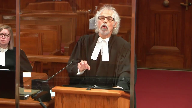
There aren’t small claims courts on reserve.
You can’t just easily go and file materials.
You can’t even virtual hearings like we’re doing here.
That presupposes secure internet access.
That doesn’t exist.
And so we have to, we can’t just keep saying the answer is this, except for this group of people.
It is our submission, without the prospect of charges being stayed, there is little incentive for the state to put the resources they need into fixing a dysfunctional bail system.
It will always be too difficult.
It will always be too expensive to provide Indigenous people in remote and flying communities with a functioning bail system, until and unless there are consequences for ignoring this problem.
I am struck, and I’m just going to conclude now, Chief Justice, I’m struck by the fact that in many ways the respondent’s position is somewhat of a double standard, because we know that when Indigenous people breach the conditions of their bail, they’re charged, and Crowns urge that people be jailed for these breaches.
But when it’s the state who’s at fault, when they’re responsible for breaching the charter rights of accused persons, only then is restraint urged, and we suggest that is an impossible double standard.
Thank you.
Justice Wagner (01:16:49): Thank you very much.
Boris Bytensky.
Speaker 6 (01:17:42): Yes, sir.
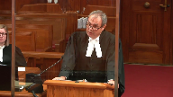
Chief Justice, justices, the Ontario criminal lawyers association makes two primary points, both of which relate to the wider issue of the right to timely bail.
As our principal submission, guidance from this court is desperately needed to help bail courts across Canada and all those who appear in them to properly understand that there is a guarantee of timely bail.
In particular, we urge the court to confirm that every accused person in Canada has the constitutional right to not only appear before the court within 24 hours, but also with narrow exception to proceed with a bail hearing at that first court appearance if they are ready to do so.
To address the paradox that Justice Katsiere and Justice Roe and Justice Moldava that you mentioned earlier, in our respectful submission this court should make it absolutely clear that when a person comes before the court, section 516 does not give a broad power to adjourn cases for three days just because there’s no time to deal with them.
Section 516 should be reserved for the rare situation when there’s a bona fide ongoing investigation or other good faith request by the crown for an adjournment and it should not be granted just because there’s no room.
I have personally litigated cases such as Zerenchang, Jevons and last year’s case for nearly 20 years.
That I’ve been involved for so long tells us itself that there is a long-standing ongoing problem.
Courts have said since at least 2002 that accused persons should not have to make appointments for their bail hearing.
The insidious problem of bail delay has continued largely unchecked despite a sprinkle of cases mostly from the trial level, despite statistics, academic study, reports from government and from NGOs.
Many of these are cited in our factum and the factum of others.
This problem is a national one.
It is not Toronto centric or unique to larger urban centre nor is it confined to smaller or rural communities where jails and courts are often located far apart.
In Ontario, only 3% approximately of those who appear in bail courts are ultimately detained without bail.
Yet defendants spend an average of over five days navigating the bail system prior to release.
This is not new and this is not right.
Why should you tackle these broad questions now where only the 24-hour rule was violated in Mr. Riley’s case?
Two reasons.
First, as this court has noted in Antick, Zora, Myers and Oland and among other cases, bail issues are particularly elusive of appellate review.
How many more years will it take for a different subspecies of bail delay to reach a provincial court of appeal?
How many more defendants will have to languish in custody waiting for bail hearings due to the absence of guidance from this court?
To an accused person who is unable to proceed with a timely bail hearing due to factors beyond his or her control, it matters not that the particular aspect of the delay is properly characterized as a section 7 or a section 9 or perhaps a section 11 E violation.
For those persons for whom liberty is improperly denied even for just one day, these are simply distinctions without a difference.
Second, as Justice Martin you wrote in Zora, you can’t ignore the current context in which the bail system operates and as Mr. Rudin said, you must view it through a wide-angle lens.
The court went beyond the narrow questions in Antick and in Zora to provide much needed guidance to the courts and to the participants in bail hearings and timeliness of bail hearings is perhaps the sole remaining subject in this court’s dialogue to the lower courts about how the system must function.
We urge you not to pass up this opportunity to complete the conversation.
In my brief remaining time, I’d like to comment about the interim bail suggestions, a tool that I submit can assist lower courts in preventing bail delays at the front end.
The idea of permitting the court to release somebody who otherwise might not get a timely bail hearing perhaps with a requirement to them to re-attend was suggested at paragraph 56E by the Alberta Court of Appeal in this very case and a similar idea was expressed in the Brown case in 2007.
I set out reasons in our factum why this court should expressly sanction this approach.
This will create leverage and the power that this leverage creates alone will act as a strong motivator for crowns and others to take reasonable bail positions in all cases and it will help the system deal with bail matters efficiently and responsibly.
Finally, those who suggest that these interim proceedings might themselves be time consuming and may lead to disputes, this misses the mark.
The alternative is a complete denial of liberty in a remand centre for days.
So subjecting a defendant to even rigorous terms for a short period of time is an enormous improvement.
We must exercise restraint and ensure that the adjournment is as short as possible.
However, this is a good idea.
Ultimately, I submit to you and I finish with this, Chief Justice, faithful to the principle set out in Zora, interim conditions can develop through practice.
While this may not result in a perfect solution as Voltaire once wrote, perfect is the enemy of the good.
Good is surely needed.
Thank you very much.
Justice Wagner (01:23:13): Thank you very much.
Maître Gagnon-Rock, on va nettoyer le podium.
Speaker 7 (01:24:19): C’est le juge.
Overlapping speakers (01:24:20): Bye.
Justice Wagner (01:24:20): Yeah.
Justice Rowe (01:24:20): Yes.
Speaker 7 (01:24:20): Monsieur le chef, mesdames les juges, bonjour.
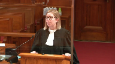
J’aurais bien des choses à vous dire et à corriger à propos de l’arrêt Riley mais mes collègues ont déjà fait un excellent travail et j’ai bien confiance en les représentations également du procureur général du Québec.
Je me contenterai dans ce cas-là de discuter avec vous de la justesse de trois phrases toutes simples que la cour d’appel de l’Alberta a écrites avec lequel l’association et moi-même avons un profond désaccord.
Malheureusement, ce sont trois phrases qui à mon avis se trouvent au coeur de la direction de la cour d’appel de l’Alberta et de la décision que vous avez devant vous.
Quelles sont ces trois phrases?
Vous les avez reproduites dans le recueil condensé que j’ai soumis à la cour et vous les trouverez au paragraphe 34 et 35 de l’arrêt de la cour d’appel de l’Alberta à l’onglet 1.
Ce sont ces trois phrases, celles qui débutent le paragraphe 34 et celles qui débutent le paragraphe 35 où la cour d’appel de l’Alberta exprime l’avis qu’un arrêt des procédures peut dénoncer une inconduite étatique mais qu’elle ne permet pas de corriger le problème qui est à son origine.
Avec beaucoup d’égards pour la cour d’appel de l’Alberta, l’expérience québécoise démontre tout le contraire.
Nous aussi, malheureusement, au Québec, nous avons eu de sérieuses difficultés avec le respect de l’article 503 du code criminel.
Je vous invite à lire à cet effet la décision de la cour supérieure du Québec Garneau qui traite tout le portrait des difficultés québécoises avec le respect de cette limite du 24 heures pour une première comparution.
Pour résumer, puisque j’ai cinq minutes devant vous, vous pourrez constater à la lecture de cette décision que l’État québécois a fait le choix il y a plusieurs années en toute connaissance de cause de ne pas assurer de comparution les dimanches et les jours fériés.
Ce qui évidemment a conduit à des violations systémiques qui se sont répétées à chaque semaine durant plusieurs années dans la province du Québec.
Justice Kasirer (01:26:19): est-ce que c’est une façon de distinguer Garneau du cas de figure qui est le nôtre dans Garneau on parle de l’immobilisme de l’appareil étatique, de l’absence de volonté d’aller de l’avant tandis qu’on voit en Alberta tant bien que mal,

et puis je ne nie pas qu’il y a des problèmes, mais que l’État qui cherche tout de même à mettre sur pied un système plus fonctionnel, est-ce que c’est une différence qui vous semble pertinente?
Speaker 7 (01:26:52): Je pense que c’est une différence qui est plus apparente que réelle.
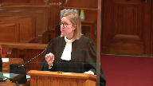
C’est-à-dire que l’État québécois a été au courant qu’il y avait une violation, qu’elle participait à une violation.
C’est la même chose pour l’État albertain également.
C’est-à-dire qu’on a fait le choix de faire des changements mineurs mais sans mettre selon ma compréhension du problème les ressources nécessaires.
Alors, c’est à mon avis un choix également que l’État albertain a fait tout comme l’État québécois.
Alors oui, les circonstances sont différentes.
Mais, il y a un choix quand même gouvernemental qui est fait de continuer de violer une règle claire du code criminel.
Alors, ce que je vous disais, c’est qu’heureusement, vous aurez peut-être remarqué, je pense que Monsieur le juge en chef m’a démontré qu’il le savait déjà.
Je vous parle au passé.
Parce que ces violations sont terminées depuis tout récemment.
Et nos avancées à l’égard du respect de l’article 503 du code criminel, nous les devons à l’arrêt des procédures qui a été prononcées pour une première fois en 2002 par un juge de la Cour du Québec de l’autre côté de la rivière Gatineau.
Justice Wagner (01:28:01): d’autres cependant défauts qui font l’objet de débats devant les tribunaux.
Peut-être pas celui-là, mais d’autres défauts sur 503.
Speaker 7 (01:28:08): de l’enquête sur mise en liberté qui sont toujours en cours,
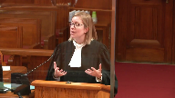
mais on a eu une première décision, en fait on en a eu une en 1997 de la Cour supérieure, on en a eu une en 2002 qui a forcé l’État à mettre en place des procédures qui pourraient permettre de respecter l’article 503.
Et on en a eu, tout récemment, une qui a été rendue en 2020 qui a aussi, même avant d’être rendue, convaincu l’État de mettre en place un système qui permettait d’assurer des comparutions le dimanche et les jours fériés.
Justice Côté (01:28:39): Mme Gagnon-Rocque, que l’arrêt des procédures soit un remède efficace, comme vous dites, pour contrer ou lutter contre un problème systémique, ça va, mais est-ce que c’est votre prétention que l’arrêt des procédures peut être invoqué avec succès par des centaines, voire des milliers d’individus qui pourraient faire face au même problème?
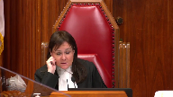
Speaker 7 (01:29:01): Je pense que c’est un peu l’expérience québécoise.

Évidemment, je me suis posé la question parce que c’est la préoccupation de la cour d’appel d’Alberta.
Je crois que non.
Je pense que et vous me permettez l’expression, je pense que c’est une course.
C’est-à-dire que le premier ou les premiers qui vont pouvoir l’invoquer pourrait obtenir l’arrêt des procédures.
Après ça, il faudra voir.
Je pense que c’est un peu l’expérience québécoise également.
C’est ce qui s’est passé dans les derniers mois.
Monsieur Garneau a été le premier à être entendu par la cour en évoquant ces préoccupations-là.
Maintenant, par la suite, une fois que le problème est dénoncé, une fois que l’État met des mesures en place pour remédier au problème, je ne pense pas que toutes les autres personnes ont droit à l’arrêt des procédures parce que l’effet dénonciateur, l’effet correctif est déjà atteint.
Justice Wagner (01:29:49): Je vais vous laisser terminer parce qu’on vous a posé des questions.
Je vous laisse une minute de plus.
Speaker 7 (01:29:53): C’est très généreux de votre part.
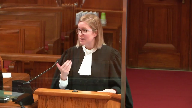
En fait, ce que je voulais vous dire, c’est que je pense qu’il est inexact d’affirmer ce que la cour d’appel de l’Alberta affirme en disant que le gouvernement ne fait rien pour corriger les problèmes systémiques qui l’ont motivé.
C’est peut-être vrai en Alberta, durant les années où Monsieur Riley s’est adressé à la cour.
Mais je ne voudrais pas que cet énoncé-là est vocation à s’appliquer généralement et que ça guide vos réflexions.
Parce que, peut-être que vous me trouverez optimiste, mais je continue de croire que l’arrêt des procédures peut corriger un problème systémique.
Merci, maître.
– Sous-titrage ST’ 501
Justice Wagner (01:30:31): La cour va prendre la pause du matin.
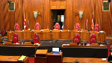
15 minutes.
Monsieur le Président, mesdames et messieurs, mesdames et messieurs, mesdames et messieurs,
bonjour à tous et à la prochaine.
Speaker 8 (01:31:54): Yes, good morning.
Justice Wagner (01:31:56): Good morning.
Speaker 8 (01:32:01): The narrow issue on appeal is whether the trial judge erred in granting a stay.
Did the judge commit errors that justify appellate intervention?
And if so, is a stay warranted for the state conduct at issue?
More broadly, the appeal raises the issue of how should the Babos analysis be applied to state conduct that impinges on the integrity of the justice system only because of the systemic nature of the breach.
And by that, I mean, the breach of the appellant’s charter rights alone here would not harm the integrity of the justice system because there was no egregious state conduct vis-a-vis the appellant.
Although there was a breach of an important charter right, that alone will not merit a stay unless there is serious harm done to the integrity of the justice system that cannot be avoided short of staying the prosecution.
And that harm in the case of the systemic breach comes from the court being seen to condone serious state misconduct.
Where the state conduct is not egregious, there are other remedies available that will be sufficient to preserve the integrity of the justice system.
In this case, it’s not the fact the appellant wasn’t brought before a justice within 24 hours that caused harm.
It was that under the new bail system, many, many others were similarly affected and the state has had difficulty rectifying the problem.
The crown submits that it’s not necessary to alter the Babos framework to address cases like this.
Whether a stay is appropriate in a case like this will always depend on the specific circumstances of the breach in the case, which ultimately determines whether the state conduct is sufficiently egregious or so egregious, there is no other way to prevent irreparable harm to the integrity of the justice system.
Justice Wagner (01:34:08): Well, here the trial judge and the Court of Appeal came to the conclusion that there was a systemic breach.
Overlapping speakers (01:34:19): That was that was our conclusion.
There’s there’s no dispute.
Justice Wagner (01:34:22): Once we conclude that there is a systemic breach, don’t you think that you should have a remedy that would apply to call for the authorities to change the system?
Speaker 8 (01:34:39): that depends on the nature of the systemic breach they’re not not all systemic breaches will be equal and I’d submit in this case that when you are looking at the context of what happened here this is not the type of egregious breach that typically is associated with the granting of a stay this isn’t government disregard for a problem or the case where there’s a known solution and government just couldn’t get going to provide the funding or take steps to implement the solution this is a very very different problem here we have breaches that are occurring as the unintended result of good faith decisions that were made during the planning and implementation of the new bail system decisions that were made without good information that would inform the planners of the exact outcome of what they were doing and in the absence of consensus among stakeholders about what they should do early in the planning process the planners did consider a two-apparent system where you would have a person brought before justice when the bail file came in and then you would have a you know set a separate time for the bail hearing itself but there were stakeholders that were opposed to that the police and defense council believed that that would ultimately uh be detrimental to having timely bail hearings to govern
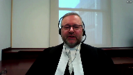
Justice Rowe (01:36:11): to choose, those were decisions made by the government of Alberta.
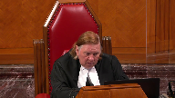
What advice they were given, what pressure was put upon them is of little consequence in my view.
I am someone who was, by experience and inclination, willing to give a certain latitude to those who are seeking to make improvements in the system, and I’m mindful of the limits of government resources, but if you have a situation where it’s clear, and I think it is clear from the record, that the system which was sought to be put in place just doesn’t work very well, isn’t it incumbent on the state to make a course correction and say we can’t continue down this path?
And does it not follow that if the state continues down the path, notwithstanding these widespread problems, that the court at some point has to say enough is enough, we’re going to dissociate ourselves?
Speaker 8 (01:37:15): Well absolutely, but we can’t, we have to be careful not to impute the knowledge we have now to the decision makers and the knowledge they had at the time.
So they went forward with the belief that they would be able to make a single hearing system work and comply with 503.
They believed that that was possible and even when the problems with 503 violations became apparent, they believed that that could be addressed by eliminating the sources of delay.
My friends have said or have been treating the failure to address the 503 problem as if it’s an all-or-none proposition and that’s not accurate.
If there are a hundred things that must be done to solve a problem and you know you fix 95 such that the problem still exists, it’s not fair to say that nothing was done to fix the problem.
And here there were multiple sources of delay in the system in all aspects.
Like this is a system with multiple moving parts.
There were problems with the police, there was problems with how administrative staff handled the files, there were problems with how the crown office was handling the files, there was problems with how the justice office was assigning the files.
Even at the outset they hadn’t yet been able to get the full complement of justices because of the slow process of having justices appointed in the legislature.
So all these…
Justice Brown (01:38:53): There seem to be good reasons for supporting the trial judge’s conclusion at paragraph 63 that the evidence reflects a systemic and ongoing problem, and for that matter, it doesn’t really give any reason to dispute the Court of Appeals’ characterization of the Crown’s position here as one of resignation and fatalism.
Speaker 8 (01:39:17): it’s it’s not resignation and fatalism it’s it’s just realizing that certain problems are very hard to solve

and it’s wrong to say well they just didn’t fix it because you know it’s like building a house you don’t just build the house like there’s thousands of steps that you need to take to finish the house but one of the
Justice Brown (01:39:40): One of those things you need to do, surely, is whatever reforms you attempt to create have to operate within the statutory parameters established by the criminal code.
Whatever you do has to meet the state’s obligations under the criminal code.
Whatever you do it is up to the crown and its discretion.
Speaker 8 (01:40:06): That’s absolutely true, but this is more of a situation where they weren’t anticipating the problems that occurred.
And then you’re in a situation like, okay, now we have this problem, we don’t know what the solution is, how do we get out of the problem?
And you know, it’s easy after the fact to say you should have done X, you should have done Z, you should have done whatever.
But at the time that the planners are making these decisions, they don’t know where the delay is.
They don’t know if the solutions they are implementing are going to have the effect they want.
They intend them to.
They don’t have a reason to believe they won’t.
Justice Wagner (01:40:43): How long should we wait?
How long should the court wait to decide whether a stay of proceedings should be the remedy? How long?
Speaker 8 (01:40:53): Well, at a certain point, it’s going to become apparent that they’re ignoring the problem.
Overlapping speakers (01:40:58): Isn’t that what the first judge, isn’t that what the first judge decided?
Speaker 8 (01:41:02): without considering the context and therein lies the error.
You can fault me for not climbing a ladder and you can draw a certain, um…
Justice Brown (01:41:12): But that’s not the error the Court of Appeal found, right?
The Court of Appeal didn’t say that’s an error.
The Court of Appeal found an error in her choice of remedy.
It called the Crown’s position reflective of a culture of complacency, right?
So the Court of Appeal didn’t think that the trial judge had erred in that respect.
Speaker 8 (01:41:34): With respect, they did.
They found that it was an error for the trial judge to have equated the mere fact of failure with a willingness to trample on charter rights.
Justice Côté (01:41:46): So, you conceded that the first step of the Babas test was met.
I have difficulty to understand that concession given what you are saying to us about taking the context into consideration.
Speaker 8 (01:42:02): it’s this all or none, it seems to be there’s an all or none approach to this.

Like I run a marathon and I either make it
or I don’t
but I don’t get any credit if I made it you know 10 steps from the finish line.
It’s not a fair characterization of what’s happened here.
The system at the time that the court of appeal hearing was held was vastly improved from the one it was when it first started and it’s vastly improved from the system it is today and they’ve in fact now
Justice Abella (01:42:36): I’m sorry, doesn’t that suggest that the whole question of systemic remedies focuses on how good the intentions were of the state in devising responses?
And if that’s the test, it seems to me, you almost read out the consequences, which are that there is a continuing problem, a continuing systemic problem.
So we meant well, doesn’t cut it, it seems to me, if you’re doing a balancing between seriousness of the offense and harm to the justice system in refusing to remedy, not refusing, sorry, that’s exactly the intentional test that I think doesn’t have any role, in not sufficiently addressing the problem.
But we don’t give marks for effort.
Speaker 8 (01:43:31): but is that correct because there are there are situations where a systemic problem exists because the government isn’t doing it
Overlapping speakers (01:43:40): isn’t doing enough isn’t doing enough.
Speaker 8 (01:43:43): But that presumes that there was something that could be done faster.
And this is us looking, taking what we know now, imputing it to the decision makers then.
If we stood in their shoes with the knowledge they had, we may very well have taken the same steps as them.
But we have the benefit now saying, well, that was a bad idea or that didn’t work.
But that is us looking at it in the past.
And I think that when we’re looking at systemic breaches, you do have to look at government action.
It’s not that they did nothing to fix the problem.
I mean, if that’s the standard, then anytime there’s a systemic breach, we’re going to have to grant a stay because it’s going to impair the integrity of the justice system.
It’s just the way it is.
Like either you get it right or you don’t.
And you’ve said in the context of costs that the government shouldn’t be held to a standard of perfection.
And there must be some acknowledgement or consideration of the circumstances that the planners found themselves in.
It’s not that, you know, they didn’t do anything to fix the problem.
Justice Martin (01:44:52): circumstances, you suggested that we would be imputing knowledge at this stage, but wasn’t that the very basis of the Irving report and wasn’t that part of the testimony of the crown witness from the Edmonton police service?
Hasn’t this been known for a long time?
Speaker 8 (01:45:11): No, no, no, it has not.
This is a new system.
The Irving Report addressed problems with the old system.
And then you’re left with, well, how do we make these changes to the old system?
What should we do?
You consult the stakeholders, you get advice.
In retrospect, they might have gone with the two-hearing system.
Knowing now what they know, the planners probably would have done things very differently and there would have been very few instances of Section 503 violations.
So it’s not that the Irving Report sets out a perfect blueprint that if you do X, Y, and Z, you have a perfectly functioning system.
You’re operating in a vacuum.
The Irving Report actually noted there was a lack of information about the operation of the old bail system that would permit them to make accurate predictions of what effect changes would have on the process.
Justice Karakatsanis (01:46:05): over here.
I guess we’ve got findings of fact by the trial judge, though, that do not line up with what you’re saying.
She found that the problem was widespread, that it was not being addressed, that there was no sense of urgency.
You’re inviting us to put all of that aside and say, well, no, it couldn’t have been done any faster.
So given her findings of fact, I guess, how can we accept the reasons you’re giving us that she erred, without saying that there was palpable and overriding error?
And that wasn’t what the Court of Appeal found.
They agreed with her on the systemic issues.
Speaker 8 (01:46:50): only that they agreed only that there’s a breach that affected many people they disagreed that the record supported her finding.
It comes back to do you look behind the fact that many people have been affected by the breach if not then there’s only one category systemic breach.
I would submit that the trial judge as the court of appeal found did commit palpable and overriding errors in her findings so we on appeal if you agree do not give them deference and the court of appeal or you can impose your own view of remedy we’re not stuck with an unreasonable finding of fact there’s no evidence that government didn’t do anything or there was a culture of complacency so other than the fact they did not get the problem solved and that’s not looking at what was done that you know you’re not giving them credit for eliminating 50 percent of the possible sources of delay that ultimately contributed to the 503 problem.
Justice Karakatsanis (01:47:53): But can I ask you this then?
You said that this was a good faith decision, that it was a mistake to look at what happened after the actual timing of Mr. Riley’s circumstances, personal circumstances.
Are the, is the evidence that was filed and that was examined by the Court of Appeal relevant at all to whether or not there was a sense of urgency or whether the problem was being addressed?
Is that relevant at all in your submission?
Speaker 8 (01:48:29): I actually didn’t submit that what has happened since is not relevant.
It is because we are dealing with a systemic problem and the court needs to know the scope of that problem in order to assess the seriousness of the state conduct.
It is relevant but you can’t just look at the fact that the state has failed to remedy the problem without also looking at why.
My friend pointed out to the very worst statistic that we have seen in the past is that we have seen a decline on that table.
That coincides with the introduction of duty counsel to the system.
After duty counsel was added to the system, not unexpectedly, we see a dramatic rise in 503 violations because we now have another source of delay that you have to troubleshoot.
You have to find out what is causing the delay and fix the problems.
After a period of time, the numbers of 503 violations started coming back down.
Today, they have adopted a two-hearing approach for detainees who are approaching 20 hours of detention because they have now realized that it is not going to be possible to get a person before justice within 24 hours in every instance under a one-hearing system.
Even having implemented that, there are still cases of 503 violations.
You say, how can that be?
In some instances, you can send the file to the Crown Office until very close to the 24-hour marker after.
This can happen in a small rural detachment where you have only two members.
Traffic fatality happens.
They are called out.
There is no one in the office to work on the bail file.
This is really an intractable problem due to the hugely variable nature of bail.
You can do all sorts of things to try and eliminate it.
They have and they have greatly reduced it.
I don’t think you can just say you didn’t solve the problem.
It is a systemic breach.
Therefore, it is egregious conduct.
Therefore, we have to stay at to preserve the integrity of the justice system.
That is not an accurate or fair approach to things.
Justice Moldaver (01:50:42): this man was arrested, if I’ve heard you correctly.
In other words, the system was, new system was operating five months or so at that point, and you say that in assessing whether this was a systemic breach and indeed a systemic breach of such proportions that a stay should be instituted, the court was entitled to look at what was happening after that, if I understand you correctly.
Speaker 8 (01:51:18): For the limited purpose of looking at what the systemic problem is.
If we were only to look at what was happening up to the point in time where Mr. Riley was detained then there would be no basis for a stay at all.
But you know that ignores the systemic nature of it or you’d say well you know it’s an early system.
I don’t take the position that it is wrong to look at a broader view of the systemic problem but in doing so you must also look at the context of that problem.
Is it a case where government is not doing something they should or know to do?
Is it a lack of funding?
Is it something like that versus you know is this a problem that you know government is desperately trying to solve
but you know does not know how?
Justice Abella (01:52:12): doesn’t she deal with the context and lay some of the responsibility at the feet of the state in paragraph 63 to 66 where she talks about funding problems, the number of hours, the fact that despite recommendations from Legal Aid about funding there hasn’t been any change and ultimately that this paragraph 68 where she called the problem egregious.
So it’s not clear to me what you think she missed when she was looking at what the factual context was other than simply the numbers.
She did identify what she saw as ongoing repeated failures to address the problem.
Yeah I submit the judge erred and the record does not support the finding.
In her findings of fact, she erred in her findings of fact.
Speaker 8 (01:53:11): Absolutely, and I can go through the three errors.
I believe that influence her characterization of this breach is more serious than it is.
And with respect to duty counsel, that’s a policy choice and there was no allegation that there was a breach of the right to counsel.
There was no finding there’s a breach of right to counsel.
There’s no evidence that had duty counsel been there, the problem would have not occurred.
In fact, what we now know viewing with the benefit of hindsight, if we had introduced duty counsel at the outset of the pilot project, we very likely would have had much greater numbers of 503 violations than we did.
I think government is entitled to decide when in the implementation of the new system, they introduced duty counsel and it wasn’t unreasonable for government to wait until they got the system up and running before they tried to introduce yet another party to the process, but I’m getting far field.
The three errors I would submit that the trial judge commits is the first one I said is equating the mere failure to solve the problem with flagrant disregard of a charter right or, you know, that’s not a fair characterization and it is not supported by the evidence before the court.
Efforts were being made to rectify the problem and she’s simply concluded from the mere fact of failure itself that, you know, government’s failure is due to their disregard of charter rights.
Well, that was it.
Justice Moldaver (01:54:47): And Babas makes it clear that it isn’t necessary to find crown misconduct.
And so this is a situation where I think it’s being alleged that, you know, that this was just taking too long and the situation wasn’t getting better and it was going on and on and on and on and it turned into, if it wasn’t at the outset, it turned out to be a real systemic problem.
But I guess my real question to you is this red light, green light, you know, orange light, it sounds like a great idea, doesn’t sound like rocket science to me.
Within 20 hours, we get the person to a JP because that’s what the code says.
I mean, even that could be arguably a little bit offensive, but assuming that you get the person to the JP within 24 hours, I doubt that you’re going to get many complaints.
But you know, it sounds so simple.
I mean, I just don’t quite understand in my own mind why it took so long to come to such a simple solution.
Speaker 8 (01:56:05): And I’m sure if they knew what they know now, they would have implemented that.
Overlapping speakers (01:56:09): What is it that they didn’t know then?
They knew the numbers.
Speaker 8 (01:56:15): to remove delay didn’t solve the problem.
But at the time they were implementing all these solutions, you suspect there’s delay here, here, here, here, and you make changes here, here, here, here, and then you have to wait to see what effect.
They didn’t know that their efforts to remove the delay would not be able to get everyone before justice within 24 hours.
So they had to wait 24 hours to see what effect it would have.
And they didn’t know that their efforts to remove the delay would not be able to get everyone before justice within 24 hours.
So they had to wait 24 hours to see what effect they would have.
They didn’t know that their efforts to remove the delay would not be able to get everyone before justice within 24 hours.
Justice Wagner (01:56:37): Sir, the breach has been going on for 17 months.
That’s what the first judge said in her judgement.
Is that too short?
Should it be longer before taking additional steps?
Speaker 8 (01:56:53): I don’t know that you can put a precise time frame on that.
It really does depend on the context.
At what point, I think, I guess you could look at, what point was it reasonable for the state to abandon the one hearing process? And that-
Well, of course-
And that, in terms of-
Justice Brown (01:57:09): The Court of Appeal seemed to think that certainly by the time of the appeal it would have been a good time to have abandoned it.
It says significant problems still exist.
Points to the crown’s explanation that, well, it’s adequate the vast majority of the time.
It’s undesirable to have designed a bail system that’s able to handle any bail volume, which isn’t really the issue.
And the trial judge didn’t consider the realities of how long it takes to get funding.
So even by the time the Court of Appeal decided this matter, it seemed pretty obvious to that panel at least that it had gone off the rails if it was ever on the rails.
Speaker 8 (01:57:55): Again, that’s the conclusion you draw in the absence of knowledge that the decision makers had.
Justice Karakatsanis (01:58:05): Can I ask you this, I think your entire argument rests on the fact that this was an intractable problem, that it was just impossible to solve it, it was so complicated, there were different steps that needed to be taken into account.
That wasn’t, was that, were there any findings of fact to support that?
Should we be reweighing the evidence to come up with our own conclusion?
Because it seems to me if we don’t, your entire position rests on the fact that, you know, this is the kind of problem that just can’t be solved, and I have to say, I don’t see as a matter of logic how that follows.
Speaker 8 (01:58:47): that that is not what I’m proposing or saying.
I think that where a judge makes findings without evidence to support it that is a palpable and overriding error and the judge disregarded the evidence that was before the court that you know it’s been it’s been minimized by my friends
oh they just had meetings they just sat in the office
but I mean that’s how they identified what the problems were they didn’t then just say
well we got a problem here we got a problem there they went out and they corrected the system to fix the problems that had been identified.
So to find that government did nothing or was complacent or you know trampled on charter rights or flagrantly disregarded them is an unreasonable finding a fact that is not supported by the evidence at all.
Overlapping speakers (01:59:44): the court of appeals conclusion that it was an unreasonable finding of fact
Speaker 8 (01:59:48): Well they said that the record did not support the judge’s conclusion that there was a flagrant disregard of Charter rights.
Justice Brown (01:59:58): Is the trial judge’s recounting at paragraph 39 of her reasons of the cross-examination evidence of Staff Sergeant Fay accurate?
Speaker 8 (02:00:06): I don’t have that before me, could you just quickly give me a summary or.
Justice Brown (02:00:13): He would she recounts this when asked why accused who were in cells for extensive periods of time were not brought before a provincial court Judge during court operating hours.
His response was that this was not the practice Even though a tunnel exists between the courthouse and EPS headquarters an accused person brought through the tunnel for other purposes
Speaker 8 (02:00:32): With respect to the police officer, he’s not aware of the operation of the bail hearing office and the new system that’s in place.
We have now dedicated prosecutors.
Justice Brown (02:00:41): We’re re-arguing the motion.
I mean, it sounds like she had evidence.
Justice Wagner (02:00:48): Uh.
Speaker 8 (02:00:49): that they should have brought him to the courthouse.
There’s no other evidence that that was a viable.
Justice Brown (02:00:56): that allows her to conclude that they really weren’t taking this particularly seriously.
Speaker 8 (02:01:01): but that is only a valid conclusion if that was a viable alternative if that’s not really a possibility whether the police officer knew why they didn’t do it if that’s not a viable alternative it is not evidence of complacency uh you know just descend upon the court with 30 people the bail files are in the bail office already in the probably the hands of the JP and
Overlapping speakers (02:01:26): you know,
whatever trial clause.
Speaker 8 (02:01:29): Well, to the extent that the judge is making findings not supported by the evidence, absolutely, we have to make our own findings a fact.
I mean, that is one of the errors the Crown alleges the judge makes that justify appellate intervention.
We can’t just say, you know, she said this and we’re stuck with it.
I mean, if it’s not a reasonable finding, then it should be reviewed.
Justice Abella (02:01:57): Can I ask you what you think the Court of Appeal meant in its penultimate paragraph, paragraph 59, where it essentially, it seems to me, says having concluded that the seriousness of the offense really tips the balance.
It goes on to list four reasons why this is a serious problem and then concludes with, unless they remedy the problem in very short order, it’s inevitable that the issue will be back.
So what exactly does that mean?
Having identified all of the problems, their obligation on the Crown, the fact that it’s been two years without any solution, so they’re saying, but we’ll give you one more chance.
It strikes me as an odd approach to how we look at breaches of the Charter.
Speaker 8 (02:02:57): how I would interpret that passage is it’s they’re finding that viewed in context the state conduct is not yet so egregious that a stay is the only way to prevent irreparable harm but if this isn’t resolved quickly or soon then it will become which means egregious conduct
Justice Abella (02:03:17): What does soon mean to you, Mr. Russell?
Speaker 8 (02:03:24): I don’t know.
All I know is that continual steps have been making to improve the system and it is almost fixed.
There are still very few instances.
As to what a reasonable period of time really depends on the circumstances.
Justice Martin (02:03:44): May I change topics and go to that of alternative remedies within the framework and just ask whether or not you asked for damages on an hourly basis to be the remedy and what do you say?
I mean, your factum talks about being a proving of what the court of appeals said in terms of the stay, but I’m wondering what position you’re taking on the availability of alternative remedies and who should be setting that, how should that go?
So your help on that would be of assistance.
Speaker 8 (02:04:26): The courts, are you talking about the footnotes where they propose presumptive remedies?
That aspect of the decision you’re talking about when they propose damages and.
Justice Martin (02:04:41): Yes, I’m asking there’s a proposal in a judgment of presumptive remedies.
I’m asking did you argue for those remedies?
That’s I think the more simple question.
And then the more complicated question is before us today are you saying that that is a viable alternative that this court should also entertain and if so are we at liberty to set how would we go about setting what that amount might be?
Do you say it’s within the jurisdiction of the provincial court to give those damages on an individual case basis?
I mean, I’m just asking you what your position is about that because it figures at least prominently in terms of the assessment as to why stay is not an appropriate remedy for this problem.
Speaker 8 (02:05:31): The Crown at the appeal did not argue and does not support the presumptive remedies that the Alberta Court of Appeal proposes.
I don’t think they’re workable.
I think that this court has been clear that the proper forum for damages would be the civil court because of the nature of assessing damages and the function of the criminal court being distinct from the function of the civil court and the provincial court does not have jurisdiction to award damages but had this proceeded to trial and had Mr. Riley been convicted the obvious remedy would be a substantial reduction in sentence or credit for his pretrial custody in cases perhaps where the accused is acquitted then you know this might be a situation where costs could be appropriate applying the framework for costs noting the exceptional nation for costs but there there are other remedies that could be imposed and we’re in a tough spot because the charges were stayed before the trial was held before the trial was held and we don’t know if Mr. Riley will be convicted or not
but I would not
Justice Martin (02:06:48): other remedies that could be imposed.
You’ve spoken about a reduction in sentence upon a finding of guilt.
You’ve spoken about the possibility of costs.
Are there others that you would bring to our attention?
Speaker 8 (02:07:04): Well I think we’re looking at the integrity of the justice system.

The fact that there can be redress through damages maybe not through the criminal court is a factor to be considered but it’s not an option for this court I would submit and this court would have no ability to accurately assess what appropriate damages are for this and there will be variability between accused and that sort of thing.
So I mean my friend on the intervener side Mr. Friesen does set out in his factum a number of available remedies those are well-established remedies under section 24 1 and they could be appropriate in this case.
Justice Abella (02:07:56): Can you help me, Mr. Russell?
One of the things that I found a bit confusing in the Court of Appeals decision was why it went off on the tangent of systemic remedies and the Doucette Boudreau analysis when what was at issue here was a stay.
How did that factor in?
Speaker 8 (02:08:15): I think the court’s concern was that my admission that were you to stay the charges nothing would change because it’s not a lack of motivation for the government to fix the problem.
The government is trying to fix the problem they don’t know how
and so I think that might have been the genesis for that comment that you know when we’re assessing whether or not a stay is going to preserve the integrity of the justice system we should consider what effect the state is going to have on the state conduct and it was my submission before the court of appeal that it would not affect the state’s conduct in this case because it wasn’t a case of the state being motivated to fix the problem
and I think that is probably the genesis of that comment.
Justice Abella (02:09:08): It’s a red herring, it wasn’t really part of what was raised at the trial or at the appeal whether a request for the fashioning of systemic remedies.
Requested.
Speaker 8 (02:09:29): I’m sorry I didn’t catch that.
Justice Abella (02:09:31): Sorry, the remedies in Doucet-Boudreau are about stages of rectification for a problem.
I didn’t see anything about either party requesting that relief or rejecting that relief, and yet there’s a good chunk of their analysis on why it’s not appropriate in this case.
Speaker 8 (02:09:52): Yeah, the parties didn’t raise that and and we don’t submit now that that’s appropriate
but I think the court felt that they could not leave the situation undenounced.
This is they considered an orbiter whether or not this was an appropriate case for them to take some steps to fix what clearly is a problem that does impact on the integrity of the justice system and the Crown doesn’t dispute that it does.
It’s just saying that you know the conduct of the Crown is not so egregious that a stay is warranted and I think the Court of Appeal having decided that a stay was not warranted didn’t want to leave the issue unaddressed and they wanted to or considered fashioning some other remedy that could address harm to the integrity of the justice system.
Justice Abella (02:10:42): Can I ask?
Sorry, but to confirm, it wasn’t sought by Mr. Riley.
Speaker 8 (02:10:51): It was not sought by Mr. Riley, it was not raised by either Council, it was not argued by the Crown.
Overlapping speakers (02:10:55): This was-
Speaker 8 (02:10:56): as something the Court of Appeal did of its own volition after the hearing.
Justice Karakatsanis (02:11:03): Can I bring you back to the idea of a reduction in sentence as an appropriate remedy?
Let me tell you what my problem is there.
That leaves the person who’s acquitted with no remedy.
And that is particularly troubling me because the whole bail system is based on the presumption of innocence.
And so arguably someone who spent time in jail and then is acquitted would here be left without a remedy.
Can you address that for me please?
Speaker 8 (02:11:39): That is why I suggested that perhaps in such a situation cost might be an appropriate remedy to protect the integrity of the justice system because there is not the most obvious and best remedy which would be to provide the person a reduction in a sentence and give him back the time he has lost.
And I suggested that cost could be appropriate, potentially in that situation where there is not the remedy of a reduction of sentence.
Justice Karakatsanis (02:12:12): And while we’re on the subject of the reduction of sentence, do you endorse the suggestion of the Court of Appeal in its footnote that three days would be appropriate credit, up to 30 hours and 10 days?
Speaker 8 (02:12:32): I believe that the detainee should receive substantially more credit than the time they were inconvenienced, but where that line is drawn I don’t have a position.
Justice Moldaver (02:12:49): Russell could I ask you a question that Paragraphs 37 to 45 of the Court of Appeal decision the court sets out a number of what it called irrelevant considerations That the trial judge took into account now.

I just want your position as to whether you believe that those The various factors that the court listed are accurate and that they are irrelevant It may not impact, and I don’t think it necessarily impacted on the overall You know conclusion that came to I just want to know whether you believe that she did take into account a number of irrelevant matters
Speaker 8 (02:13:35): that is the Crown’s position.
I have that set out in the factum.
There were some that I did not agree with and did not set out in my factum.
I don’t have the two side by side to know which ones I didn’t feel were were justified.
But I know that we submitted in our factum that considering the lack of duty counsel was an irrelevant factor, the percentage of the prison population that was in remand is not related to delay in bringing an accused before justice.
The exercise of police discretion was not really relevant because the new system was designed in anticipation of the way that police did exercise their discretion in Alberta.
And I believe the other error was in looking at the charging pattern of police and
Overlapping speakers (02:14:37): you know.
Speaker 8 (02:14:37): taking issue with the number of administration of justice charges that were being laid, which is also unrelated to the issue of delay bringing detainees before justice under the new bail system.
So in the Crown submission, those are errors in reasoning that justify appellate intervention in the judge’s decision, because they influenced her statement of the seriousness of Crown conduct.
Justice Wagner (02:15:19): Do you have other arguments?
Speaker 8 (02:15:22): I’ll just briefly go through what the Crown submits is context that should be considered that distinguish this case from cases like Simpson and Garneau where there’s clearly a disregard for the requirements to section 503 and these are that the state was trying to fix problems with the bail system it was trying to prove bail efficiency in Alberta it wasn’t cutting costs it wasn’t ignoring a problem it was trying to improve the bail system the state designed the system in compliance with section 503 they believed it was possible to create a one hearing system that could comply with 503 it took steps to monitor compliance with 503 when the 503 problem became apparent it took immediate and persistent steps and is still taking steps to solve the 503 problem and it has continued to improve the bail system to eliminate delay and it’s continuing to do so today and the the new bail system has improved the efficiency of bail in Alberta and it has addressed the number of the shortcomings that were identified in the old system such as the provision of duty council these are all circumstances that should be considered when we’re looking at the seriousness of the state conduct and is this so egregious that there is no other alternative but to stay this prosecution to preserve the integrity of the justice system like
Justice Moldaver (02:16:56): I take it from that that you’re not worried now that the floodgates are still open.
The fact that they may have been opened at that time before these other changes that you talk about have been made.
I take it now in Alberta there may be some cases where there’s an overhold, but from what I’m hearing from you, we don’t have a systemic problem there anymore.
Speaker 8 (02:17:22): Yes, the problem is very small.
We’re talking like handfuls of people and in some jurisdictions there’s no violations at all.
As I mentioned, there are still some and there’s still work to be done with respect to the process whereby police are getting the file to the bail office in a timely fashion and not right at the 24-hour deadline.
But like 90 percent of the causes of delay have been rectified.
Overlapping speakers (02:17:51): So the state of proceedings has worked.
Speaker 8 (02:17:54): The stay, well, I would submit that this would have happened regardless of the stay, because they were all.
Overlapping speakers (02:18:02): Well, we’ve kind of entered a counterfactual world now, haven’t we?
Maybe we should swear you in.
Speaker 8 (02:18:09): Well, if we are going to consider, you know, evidence of how the functioning of the system is happening now, we have to consider that.
If it’s not relevant, then we don’t, but…
Justice Brown (02:18:23): But at the very least, it sounds like it wouldn’t be raining stays if we upheld this.
Speaker 8 (02:18:30): There, I don’t know how many of the cases that are still in the system would result in stays, but there certainly would be much fewer going forward than there were right after the system was implemented and even at the time that the court of appeal hearing was held.
But that depends on how many files are still in the system because
Speaker 8 (02:18:58): and thousands of people were effective over the course of, you know, two years.
Justice Karakatsanis (02:19:03): It would also depend on the balancing in each individual case.
Speaker 8 (02:19:08): correct
but I echo comments of the court or some some members of court that there’s very little to distinguish this case from other ones other than the seriousness of the charges faced and maybe for more serious charges a stay wouldn’t be appropriate but if a stay is appropriate here then it follows that a stay would be appropriate for anyone with lesser charges than serious domestic assault.
Justice Moldaver (02:19:36): Maybe for more serious charges, the Crown should start exercising its right under 516 to seek time.
This is a classic case before us, it seems to me, where there is an alleged serious domestic assault, and one can totally understand how a busy Crown—they don’t have all the resources in the world, let’s be realistic—might not be ready to proceed with a bail hearing, because of course they have to be able to justify the conditions that are being sought now too.
And so, you know, maybe they have to look at the crimes and say, you know what, this idea of one hearing is wonderful for theft-unders and stolen—you know, joyriding or something, but it’s not for this kind of case, where your greatest fear is that you let the person out and there’s a homicide reported the next day.
So maybe it’s a matter of the Crowns being more discerning in terms of when they’re going to try for a single hearing, and when they’re going to stand up and just say, sorry, Judge, I’m asking for a three-day remand so that I can get ready for this bail hearing.
Speaker 8 (02:20:53): and that certainly it has been implemented and for the most serious matters of course the JP can’t speak to bail anyway and it just has to be adjourned
but yes that’s part of solving the problem.
Justice Brown (02:21:07): But that wasn’t this case.
Justice Moldaver (02:21:09): I don’t understand for the most serious matters the jp can’t deal with them?
Overlapping speakers (02:21:14): murder for we have murder for
Justice Brown (02:21:16): I’m not talking murder, but that wasn’t this case, right?
The investigation, if the trial judge’s reasons at paragraph 16 are right, the investigation was over in the afternoon after the police had videotaped an interview with the accused, and yet he’s detained until the next morning.
Speaker 8 (02:21:35): You’re absolutely correct.
In the early stages, there were so many sources of delay that all contribute to the 503 problem.
This wasn’t a case that the Crown wasn’t prepared to go, per se.
It was a combination of the file coming in late, the prosecutor having a backlog of cases, the JP’s having a backlog of cases.
At the very early start of this project, all of these delays were compounding, resulting in 503 violations.
And that’s the case in Mr. Riley’s case.
Overlapping speakers (02:22:09): I mean…
Speaker 8 (02:22:09): they got to it when they got to it, not because an adjournment was needed to prepare, but just because of the backlog of cases that had entered the system.
Justice Moldaver (02:22:22): No, but an adjournment was needed to prepare because you couldn’t get them there within 24 hours.
What are we talking about?
Why don’t you use the code properly?
Speaker 8 (02:22:35): I understand what you’re saying that had they used a two-hearing system even at the outset we wouldn’t be here.
But at the time they made the decision to go with one hearing they did not know what they did not know.
Justice Karakatsanis (02:23:01): But the crown still had the discretion to ask for three days.
Are you saying that because they put in place this system, there was no discretion?
Speaker 8 (02:23:13): more like there was no mechanism.
So as a result of all the delay in the single hearing system, matters didn’t just go quickly before justice.
Under the single hearing system, everyone prepared for it.
But in preparing for the cases you have before you, when there’s a backlog, you can’t even get to the files to identify there’s a problem to bring them before justice.
And we’re talking the early days of the system.
And as the delays were eliminated, then that became a more viable option.
When there’s a huge backlog of files, it doesn’t matter whether you have access to the justice or a mechanism, if there’s not the ability of the people who bring it before the justice to get to those files.
Justice Moldaver (02:24:02): By the way, just so we’re clear, I’m not suggesting you’re automatically getting three days, but that’s not what the code says.
You could ask for one day, and on a domestic matter like this, serious domestic matter, prior convictions, out on probation, I would have thought the Crown would be on very solid ground in terms of saying, we need another day to get ready for this.
Speaker 8 (02:24:31): I don’t disagree.
Justice Rowe (02:24:35): Just a practical hint in public administration, when you’re in a transitional period, you often need additional resources so that you have the existing system as a safety net while you’re trying to make what you hope will be an improved system work.
And as a point of reference, I’d give the Phoenix pay system for the federal government.
Speaker 8 (02:25:03): I also don’t disagree.
I just again refer to the fact that the decision makers, if they knew what they know now, they would have done things differently.
Overlapping speakers (02:25:15): All right, but.
Speaker 8 (02:25:16): Unless you have any further questions, I think you have the heart of the crowns.
Justice Wagner (02:25:21): All right.
Thank you very much, sir.
Thank you.
Speaker 1 (02:25:38): Chief justices, we heard from some of my friends this morning about unreasonable delays in getting bail hearings for lack of court resources.
It’s an important issue that will need to be addressed by this court in a case where it squarely arises.
This is not that case.
Here Mr. Riley had his bail hearing at his first court appearance and was released shortly after.
At issue here is a proper remedy for the 35-hour delay to bring Mr. Riley to court for his first appearance, resulting in a section 9 breach of the charter.
But section 11E has no application to this case.
The director of public prosecutions intervenes to address the conclusion from the courts below that there was also a breach of the right to reasonable bail in this case.
The court does not need to resolve this issue to decide the appeal, but if left undisturbed, this conclusion creates a new right to a bail hearing within 24 hours of arrest which would have a significant impact on criminal proceedings across the country.
Justice Wagner (02:26:36): What it means is that it could happen that the accused is before the justice of the peace within 24 hours.
And then the justice of the peace can release the accused if the Crown is able to submit arguments.
In other words, there is a bail hearing at the 24 hours delay.
Speaker 1 (02:26:58): I think that’s a good point.
Justice Wagner (02:27:04): If the crown needs more information, complicated file, if it is reasonable, the crown can ask for a delay of one day like my colleague said, or two days, whatever, which was not the case in this case.
That’s correct.
But what we’re trying to avoid…
Speaker 1 (02:27:21): here is to create a right to a bailiaring at the first court appearance and when we read the decision from the courts below they kind of confused the two and it may be read as creating that right
Justice Karakatsanis (02:27:33): but I guess this was a concession for this specific case.
Overlapping speakers (02:27:39): It was.
Justice Karakatsanis (02:27:40): Are you saying that it can be read as creating a charter right that you’re always entitled to a bail hearing, to be released on bail within 24 hours?
I’m not sure how you get there.
Speaker 1 (02:27:53): Okay.
Well, by concluding in this case, there was a breach of section 11E, meaning the right to reasonable bail was breached in this case, and it kind of creates backwards a right to a bail hearing within 24 hours because in this case, Mr. Riley did not have his bail hearing adjourned.
He had his bail hearing at his first appearance, which was later than what it was supposed to, but it’s a different…
Justice Karakatsanis (02:28:18): Obviously I don’t read it that way, but I understand your submission.
Justice Moldaver (02:28:22): Under 515 one.
He is entitled to bail unless the crown Having been given a reasonable opportunity to do
so so if the crown stands if he’s brought before the JP
Yes within 24 hours Unless the crown stands up and says You know I’m opposing bail.
I want to have a bail hearing or I want to put over then the default position is the accused gets released on his own undertaking isn’t it that’s correct
well I Don’t think anybody’s questioning that it doesn’t mean you get an automatic bail hearing
Speaker 1 (02:28:59): That’s what we’re trying to protect against, that specific last comment you just made.
So then, since there doesn’t appear to be a disagreement about that first aspect of my submissions, I will move on to my second aspect of my submission.
So the second point was that each process, the first appearance stage and the bail hearing stage have their own charter protection.
And we don’t need to melt the bail hearing process into the first appearance procedure.
Section 9 of the charter protects against arbitrary detention.
And section 11E affords protection when the bail hearing is unreasonably delayed.
So section E, as you know, guarantees the right of any person charged with an offence, not to be denied reasonable bail without just cause.
So a person is charged when the information is sworn.
And bail refers to the judicial interim release provisions in the code.
So first, the judicial interim release provisions of the code starts at section 515.
It applies when the accused is taken before justice.
It follows that section 11E is only engaged once that person is brought before the justice for the first appearance, not before.
Second, section 11E protects a person charged with an offence.
In the majority of cases, police will arrest a person who committed an offence without a warrant.
And information will not be sworn by the justice until the first appearance.
That’s especially so in provinces with pre-charge approval.
This means that for most offenders waiting in custody for their first appearance, they are arrested for an offence, but not yet charged with an offence.
Section 11E has no application.
Lastly, section 11E contains its own permissible time frame.
Courts have held that the right to reasonable bail imports a time requirement that is separate from section 503.
There’s already significant jurisprudence dealing with delays caused by lack of court resources and the challenges faced by remote communities.
And there’s no need to set any timelines for holding bail hearings in the context of this appeal.
Thank you.
Justice Wagner (02:31:09): Mr. Friesen.
Speaker 9 (02:32:02): Chief Justice, justices, Ontario intervenes to make two points.
First, Ontario submits that this court should not endorse the idea of interim bail proposed by the criminal lawyers association.
Secondly, while it takes no position on the outcome of this case, Ontario submits that a stay of proceedings should not be a standard remedy for section 503 violations.
Interim bail, the idea of releasing an accused without a bail hearing but ordering him to return to court later for that bail hearing is not provided for in the criminal code.
The language of section 516 is clear.
It states that where a bail hearing is adjourned, the accused must be remanded into custody in prison, not released into the community without a bail hearing.
No cases have been cited in which the concept of interim bail was considered, much less granted, and the issue of interim bail does not even arise in this case as Mr. Riley had his bail hearing at the first appearance.
Interim bail also runs contrary to section 515 of the code.
As Justice Cromwell held in the case of CGF when he was still a member of the Nova Scotia Court of Appeal, and this is a paragraph 22 of Ontario’s factum, according to section 515, once the prosecutor has requested an opportunity to show cause, the justice is obliged to grant a reasonable opportunity for the prosecutor to do so.
The length of that reasonable opportunity is limited by section 516 which precludes a remand of more than three clear days absent the consent of the accused.
In Ontario, the crown prosecution manual directs prosecutors to ensure that the bail hearing proceeds expeditiously and wherever possible is conducted and completed on the first appearance of the accused in bail court.
And where the prosecutor must seek an adjournment, Ontario’s prosecution manual directs that it should be for as short a time as necessary.
In reality, as the Criminal Lawyers Association acknowledges in its factum, in Ontario over 68% of bail hearing adjournments are at the request of the defence.
As proposed, interim bail would result in the automatic release of an accused including potentially one charged with violent offences whenever the court could not accommodate a bail hearing.
Now, there are understandable reasons why a court sometimes cannot accommodate a bail hearing at the first appearance.
For instance, it may turn out that an interpreter is required but none is available until the following day.
It’s also unclear how a court that is unable to accommodate the full substantive bail hearing would nevertheless be able to accommodate an interim bail hearing which might require also a discussion of what conditions to place on the accused’s release.
It’s not clear how the court could do one but not the other.
So in sum, Ontario submits that interim bail is not an appropriate or workable solution, does not find any support in the criminal code or the case law and should not be endorsed by this court.
Moving to my second point, Ontario submits that a stay of proceedings should not be a standard remedy for section 503 violations.
This approach, as advocated by some of the interveners, would turn the stay remedy on its head, transforming it from a remedy of last resort into a standard or a presumptive remedy.
This is inappropriate because not all 503 violations are equally severe or the result of a systemic problem.
503 violations are sometimes isolated events that result from an inadvertent oversight by the police in a particular case.
Of course, this does not excuse such violations but it does attenuate their seriousness.
Justice Brown (02:36:10): The suggestion there is that if it is a systemic violation, that, in fact, supports the granting of a stay or ways in favour of the granting of a stay as opposed to a one-off sort of grant, then it should be granted to a person who has a right to a stay or a one-off stay.
Speaker 9 (02:36:24): Well, it’s certain, as this court has held in Babos, it certainly is, if there is a systemic factor, that certainly is something that should be considered and may in some cases weigh in favour of a stay.
My point is simply that although in this case we’re clearly talking about what the courts have acknowledged as a systemic issue resulting from a particular way of doing business in Alberta, in other provinces where things are done differently, 503 violations are more often isolated events as I submit that occur occasionally as a result of inadvertence.
Thank you.
Justice Rowe (02:36:59): It seems to me, simply logical, that the court would be more inclined to dissociate itself from something that was widespread and endemic, rather than simply a snafu.
Speaker 9 (02:37:11): Correct.
And I think that’s the point this court made in babos that I believe in a footnote that it may be more difficult for a court to disassociate itself from a systemic problem.
Overlapping speakers (02:37:23): I would ask you to conclude, please.
Speaker 9 (02:37:24): Yes.
So as I’ve said out in my factum, courts have repeatedly held that a remedy short of a stay can be sufficient in appropriate cases, including this court in Nassau-Gallowac, in which this court cited several provincial appellate decisions in which sentence reductions were imposed for 503 violations.
Justice Wagner (02:37:45): Je vous remercie et je vous remercie pour votre attention et je vous remercie pour votre soutien.
Merci beaucoup. Merci.
Merci à vous. Merci.
Merci. Merci.
Speaker 10 (02:38:32): Monsieur le juge en chef, mesdames et messieurs les juges, le procureur général du Québec intervient dans la présente affaire pour répondre aux hypothèses soulevées par la Cour d’appel de l’Alberta sur la question des remèdes systémiques dans le cadre des procès criminels.
Le paragraphe 24-1 de la Charte canadienne est une disposition fondamentale qui permet d’assurer la protection effective des droits et libertés.
En toutes circonstances, le tribunal sera compétent pour accorder une réparation en cas d’atteinte à un droit de la Charte.
Devant une Cour saisie d’une poursuite criminelle, un requérant souhaitant obtenir une réparation sous 24-1
peut bénéficier d’une panoplie de remèdes.
En effet, cette disposition octroie au tribunal est très large pour voir discrétionnaire.
Cela étant dit, au regard des enseignements de cette Cour, le procureur général du Québec soutient qu’un requérant individuel ne peut pas obtenir un remède systémique dans le cadre d’un procès criminel.
Cela même si l’atteinte à ces droits découle malheureusement d’une problématique elle-même systémique.
Justice Côté (02:39:20): Bélanger
, votre position
, c’est qu’une cour de juridiction criminelle peut, lorsque il s’agit d’un remède individuel, accorder des dommages, par exemple?
Speaker 10 (02:39:30): La cour s’est prononcée sur cette question par rapport au cours provincial dans l’arrêt Ward.
Ça a été établi que non, les cours provinciales ne peuvent pas octroyer d’hommage.
La question n’a pas été tranchée à ma connaissance lorsqu’il s’agit de la cour supérieure.
Ce sont plutôt les voies de recours civil qui seraient appropriées pour l’obtention de remèdes systémiques générales et collectifs tel que l’ordonnance structurelle évoquée par la cour d’appel de l’Alberta.
En 1989, dans l’arrêt Mills, cette cour a établi que le tribunal compétitif de la compétence sur l’objet du litige, les parties et la réparation demandée.
Les principes énoncés dans Mills demeurent pertinents aujourd’hui et ce même si le droit a beaucoup évolué depuis, notamment en 2010 avec l’arrêt Conway dans lequel cette cour a établi l’approche applicable pour les questions de compétences relatives à la charte.
Selon l’arrêt Conway, dans un premier temps, il faut déterminer si le tribunal a la compétence générale pour accorder une réparation fondée sur la charte.
Dans un deuxième temps, il faut se pencher sur sa compétence pour octroyer une réparation spécifique demandée.
Pour ce faire, il convient de s’intéresser au mandat légal du tribunal et à l’intention du législateur dans l’attribution de ces fonctions.
C’est particulièrement ici qu’intervient dans l’analyse les questions de compétences sur les parties, l’objet du litige et la réparation demandée.
Il va de soi que dans le cadre d’un procès criminel, toute cour est généralement compétente pour octroyer une réparation sous la charte.
Cependant, le mandat, la structure et les fonctions des compétences sur la réparation sont des compétences qui déterminent la compétence personnelle d’un tribunal criminel.
Les compétences qui déterminent la compétence personnelle d’un tribunal criminel en cadre et limite la possibilité de prononcer certaines réparations.
Premièrement, la compétence personnelle d’un tribunal criminel porte essentiellement sur l’accusé.
Le tribunal n’est donc généralement pas compétent à l’égard d’autres individus que lui.
Deuxièmement, l’objet premier du procès criminel est déterminé de la culpabilité ou de l’accusé.
Il est donc important de considérer que le processus de réparation n’aurait pas lieu d’être analysé dans le cadre d’un procès criminel.
Il va également de soi qu’un tribunal criminel peut considérer le caractère systémique de l’atteinte dans son analyse.
Par contre, le tribunal n’en devient pas pour autant compétent pour répondre et remédier à la problématique systémique.
Une telle problématique dépasse largement le cadre du procès criminel.
Troisièmement, selon les enseignements de cette cour, le processus de réparation ne peut pas être considéré comme un procès criminel.
Le processus de réparation peut être octroyé au terme d’une procédure civile.
Des considérations pragmatiques justifient également le fait que seules les juridictions supérieures dans l’exercice de leur compétence civile puissent rendre des ordonnances systémiques.
D’abord, une ordonnance structurelle à l’encontre de l’État ne peut pas être prononcée sans que celui-ci est bénéficié d’un procès juste équitable.
Or, le contexte criminel se déroule sur le caractère juste et convenable d’une telle réparation.
La recherche d’une ordonnance structurelle dans le cadre d’un procès criminel serait alors susceptible d’écarter les tribunaux criminels de leur mission première.
Cela risque d’allonger indûment les délais judiciaires avec les conséquences néfastes que cela implique d’abord pour l’accusé, mais également pour la société en général, comme cette cour l’a souligné dans la Red Jordan.
Une seule administration de la justice criminelle commande qu’une ordonnance systémique ne soit prononcée qu’à l’issue d’une procédure civile indépendante.
Cela ne nie en rien le droit d’une personne de demander une réparation personnelle dans le cadre d’un procès criminel, comme la rédiction de la sentence, la dénonciation judiciaire, l’octroi de dépens ou l’arrêt des procédures.
À tout événement en l’espèce, une ordonnance structurelle visant le système de comparution ne serait d’aucun bénéfice personnel pour la plan.
Ainsi, elle ne serait constituée une réparation convenable et juste, eu égard aux circonstances.
En somme, le procureur général du Québec demande à cette cour de maintenir le jugement de la Cour d’appel de l’Alberta, la réparation des procédures et la dénonciation judiciaire relative à l’octroi d’une ordonnance structurelle.
Justice Wagner (02:43:27): That’s right reply is that
Speaker 2 (02:43:39): minutes and then my colleague Mr. Bates make an additional important point.
Overlapping speakers (02:43:43): No problem.
Speaker 2 (02:43:43): Thank you.
Firstly just to address what Mr. Russell on behalf of the crown respondent contends before this court that the delays have been eliminated or substantially diminished, respectfully I say the crown brought in this court a fresh evidence application seeking to adduce further evidence.
That application was denied and issue certainly is taken with that contention of the crown that the delays have been eliminated, problem solved.
Secondly we wish to just indicate that here at the trial in this matter the crown resisted a stay on the basis that yes, we’re not taking issue that this was serious state conduct but our position as the crown somewhat remarkably I say is that this was not a systemic problem.
That was the position that the crown took.
At the court of appeal they said we tried our best, we cared, we worked on this but a stay is just too powerful and the court of appeal noted there the crown’s sense of resignation and fatalism.
And in this court the crown says and this is at paragraph 94 of the respondent’s factum, he says this, the appellant in this case suffered less impairment of his liberty interest than other offenders who have their bail hearings lawfully adjourned.
Other offenders.
This man was presumed innocent.
Everyone who is taken for bail is presumed innocent but we are looking at this as a circumstance where somebody is an offender.
And the crown says today that this is or maybe was an intractable problem.
That breaches of the law and people’s rights that this is an intractable problem and that position throughout these proceedings respectfully we submit underscores how important this court’s judgment in this case will be.
Thank you.
Justice Kasirer (02:45:52): Can I, I’m not sure that the question’s best asked to you or Mr., Mr. Bates.
The, the crown conceded a, the 11E violation at trial.
It conceded it a second time on appeal, but has pulled back from that before our court.
In your factum, you rely on sections 7, 9, and 11E.
So my question is, if this court were to find that there is no 11E violation, is your view that, that, that has any impact on the outcome of this appeal?
Speaker 2 (02:46:29): No impact in terms of the remedy that was properly we say granted So no impact there the breaches of one’s rights under section 7 and 9 and breach of the criminal code 503 are Incredibly serious and what happened here is incredibly serious and still does warrant a stay whether we consider it under 11e or not
but that does Say something when the crown makes a concession at two levels of court and then steps back saying you know on reflection and research We want to walk that back
Speaker 4 (02:47:15): I’ll just suggest that a couple of issues arise from Mr Russell’s comments which underscore the points that are made by the appellant here.
If we look for example at the issue of getting an hourly rate of damages as part of the outcome of a successful appeal, the Crown didn’t argue it, the Crown doesn’t support it, and yet it was a major feature of their successful appeal.
In response to a question from the bench my friend indicated that this big segment of the judgment of the Court of Appeal addressing systemic remedies, he felt it was because the Court couldn’t leave the situation undenounced.
It was something that they just needed to address.
Well with all due respect that’s when you say appeal dismissed, Crown, because you didn’t bring a proper appeal that defeats the standard of review here.
This was within the trial judge’s discretion.
Justice Abella had commented about paragraph 59 and had a question about what some of the significance of that might be in terms of the Court of Appeal’s decision and I would simply say this, what it really does is underscore that the trial judge was simply right.
She got it right.
These issues came to the Court of Appeal, they were unabated, they continued with no end in sight was the Court of Appeal’s comment and to say that it’s going to come back into court in very short order if you don’t fix it really ought to just say the prospective remedy was the right remedy.
Speaker 4 (02:48:42): Thank you very much.
Thank you.
Justice Wagner (02:48:48): The court will retire, and I would ask the counsel to remain at our disposal.

The court is adjourned.
The court is ready to release its decision.
Justice Brown (02:50:23): Thank you, Chief Justice.
In these circumstances, which included the trial judge’s finding at paragraph 63 of her reasons that the section 503 breach was an instance of a systemic and ongoing problem that was not being satisfactorily addressed, we are all of the view that there was no basis for the Court of Appeal to interfere with the trial judge’s exercise of discretion.
See Babos at paragraph 41.
The appeal is allowed and the stay restored.
Thank you.